Google Analytics 4 (GA4) with GTM support for Magento 2
Face to face with the new generation: Google Analytics 4.
Google Analytics 4 is a new type of property which includes different reports than the ones Google has gotten us used to with Universal Analytics. Google Analytics 4 can be used for Websites, Apps or both at the same time, whereas Universal Analytics can only be used for Websites. In this day and age, information is key to pretty much everything, which means that keeping your existing Universal Analytics Property and setting up a new GA4-based property to run in parallel can elevate your information game to new heights and assure you make the most informed, data-driven decisions when steering your store into the future.
Our extension helps open up this new platform to Magento 2 with an integration that's easy to set up and deploy. It brings the powerful functionality and ease of use of our popular Google Analytics Enhanced eCommerce UA GTM Tracking extension to the GA4 platform so you can get ready for stepping into the future.
Features of the Extension.
- Track product impressions by position in the Category Page
- Track product clicks by position in the Category Page
- Track product impressions by position in the Search Result Page
- Track product clicks by position in the Search Result Page
- Track product impressions by position in the Related, Up-sell and Cross-sell section
- Track product clicks by position in the Related, Up-sell and Cross-sell section
- Track the number of times a product was added to the shopping cart
- Track the number of times a product was removed from the shopping cart
- Track the number of times a product was included into the checkout process
- Track each Checkout Step (billing address, shipping address, shipping options, payment options)
- Track standard events with or without tax
- Track purchases with or without shipping and tax fees
- Track shipping including or excluding tax
- Exclude Orders with 0 Value from being tracked
- Track Transactions Success Pages with Custom Success Page URLs
- Track coupon usage
- Track product Brand
- Track internal Promotion Impressions
- Track internal Promotion Clicks
- Track Sign-Ups
- Track Logins
- Track Site Searches
- Internal Promotion Widget
- Child Vs Parent (Send Parent Id or Child id cart, checkout and thank you page)
- Multi Currency Ready
- GDPR-compliant with native magento accept cookie functionality
- Multi Store Ready
- Varnish Cache Ready
- Full Page Cache Ready
- 8KB payload support
- Order Success Page Total Calculation (Subtotal / Grand total)
- Track Magento User ID
- Track user type (customer group)
- Google Ads Remarketing Tracking
- Google Ads Conversion Tracking
- Persistent Data Management
- Track product review count
- Track product review score
- Track stock status
- Track Sale products
- Track transactions by product variants (configurable product)
- Variant options - choose between product SKU or Configuration combination
- Track transactions by product custom options
- Track custom dimension Page Type
- Track custom dimension Page Name
- Product level Custom Dimension / Metric sending (Send up to 5 product attributes to GTM)
- Compatibility with Google Analytics 360 (GA360)
- dataLayer Preview Window for easy debugging with possibility of adding custom IP ranges
- Send all Simple Product configurations via the View Item event on Configurable Product Pages
- Custom trigger for Google Ads Conversion Tracking Tag
- Ability to add custom attributes to script tags for enhanced compatibility with optimization modules
- Complete sales data, including refunds and repeat purchases (PRO)
- Increased order accuracy between Magento and Google Analytics (PRO)
- Avoids missing orders (PRO)
- Avoids duplicate orders (PRO)
- GS2 Cookie support (PRO)
- Ability to choose between sending the Base or Display currency to Google Analytics (PRO)
- Measurement Protocol Tracking for Purchase (PRO)
- Measurement Protocol Tracking for Refunds (PRO)
- Measurement Protocol Tracking for Sign Up and Login (PRO)
- Measurement Protocol Tracking for Item View (PRO)
- Measurement Protocol Tracking for Search (PRO)
- Measurement Protocol Tracking for View, Add and Remove from Cart (PRO)
- Measurement Protocol Tracking for Begin Checkout, Add Payment and Shipping (PRO)
- User Properties for Measurement Protocol - Used to create Custom Dimensions (PRO)
- Track only specific customer groups via Measurement Protocol (PRO)
- Easy Measurement Protocol event debugging via Google Analytics Debug View (PRO)
- Hyvä Theme Ready (PRO)
- Hyvä Theme CSP Theme Ready (PRO)
- Hyvä Checkout Ready (PRO)
- Meta Pixel (formerly Facebook Pixel) Integration (PRO)
- Reddit Pixel Integration (PRO)
- TikTok Pixel Integration (PRO)
- Microsoft Ads (Bing UET) Integration (PRO)
- X (Twitter) Pixel Integration (PRO)
- Klaviyo Pixel Integration (PRO)
- Pinterest Pixel Integration (PRO)
- Enhanced Conversions for Google Ads (PRO)
- Ability to pre-hash Enhanced Conversion data for Google Ads (PRO)
- Enhanced Conversions for Google Analytics 4 (PRO)
- Enhanced Conversions for Leads (Google Ads) (PRO)
- New Customer Data for Google Ads (PRO)
- Cart Data for Google Ads (PRO)
- Exclude orders from being sent to Google Analytics by Order Status (PRO)
- Purchase and Add Payment Info event compatibility with the Magento 2 Multi Shipping Checkout flow (PRO)
- Full JSON container generation for Google Tag Manager Server-Side Containers, complete with all eCommerce tracking tags (PRO)
- Full integration with Meta Pixel Conversions API (CAPI) via addon (PRO)
- Full integration with Reddit Pixel Conversions API (CAPI) via addon (PRO)
- Full integration with TikTok Pixel Events API via addon (PRO)
- Full integration with Microsoft Ads (Bing UET) API via addon (PRO)
- Full integration with X (Twitter) Ads API via addon (PRO)
- Full integration with Klaviyo API via addon (PRO)
- Redis Cache Ready for Measurement Protocol (PRO)
- Send data to multiple Google Analytics 4 properties via Measurement Protocol (PRO)
- Dedicated Magento Admin Order Grid column for Measurement Protocol order validation (PRO)
- First-Party Tracking (Ad Blocker Bypass) via Cloudflare Worker integration (PRO)
- Client ID Fallback via gtag.js for improved Measurement Protocol attribution (PRO)
- Consent Management configuration - Magento Cookie Restriction Mode or External CMP support (PRO)
- UTM parameter persistence for server-side Measurement Protocol purchase events (PRO)
- Category exclusion from GA4 item_category payloads (PRO)
- Category depth limitation with configurable direction (Top to Bottom / Bottom to Top) (PRO)
- Consent state logging for Measurement Protocol event debugging (PRO)
- Grand Total calculation settings for taxes (including/excluding) for Social Platform integrations (including API Addons) (PRO)
Compatibility with Google Analytics 360 (GA360)
Google Analytics 360 is an enterprise-level rendition of Google Analytics, which provides the tools and support required for merchants to get actionable insights from the data that flows into their dashboards. Google Analytics 360 boasts a number of advanced tools, in addition to all the standard Analytics features. A couple of these tools are:
- Unsampled Reports
- BigQuery Export
- Data Driven Attribution
Apart from this, merchants using Google Analytics 360 also benefit from a higher-level service agreement which covers data freshness, collection and reporting, a higher processing limit and access to dedicated support services. Our Google Analytics 4 and Google Analytics 4 PRO extensions are compatible with Google Analytics 360 and are ready to send the data you need to build and maintain a true enterprise-level eCommerce business.
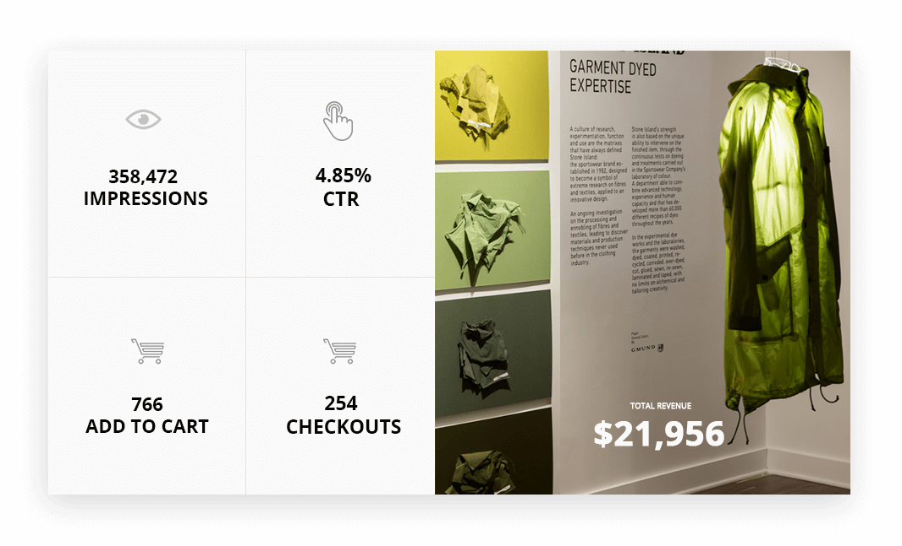
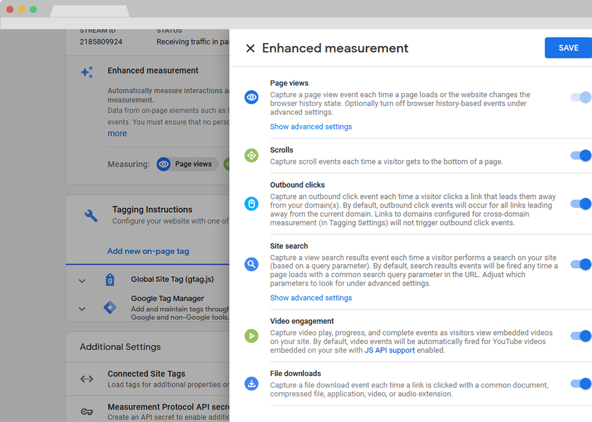
Event tracking from the get-go!
- Right out of the box, Universal Analytics only allows for tracking page-views. While this is already great information to build upon, it's not necessarily enough for a store in the modern age. With GA4, there is more information available without needing to delve deeper into its settings.
- Enhanced Measurement collects important data such as scrolling, clicks, downloads, engagements with videos on your website and more. While this is definitely possible with Universal Analytics as well, GA4 does this without the need for intervention!
Next-level retargeting!
- Most websites have a conversion rate of around 2% on the first visit. Retargeting exists for the remainder 98% of users and can spell the difference between a user never visiting your website again and securing a conversion. In most cases, however, once a conversion is secured, you may not want to immediately keep targeting the user with ads. Prior to GA4, retargeting, while still extremely efficient, lacked the dynamism of being able to exclude certain users (either temporarily or permanently) from being retargeted. GA4 changes this and allows you to more efficiently use retargeting to, for example, temporarily exclude users that have recently purchased an item from being shown a particular ad again until they're eligible for a new set.
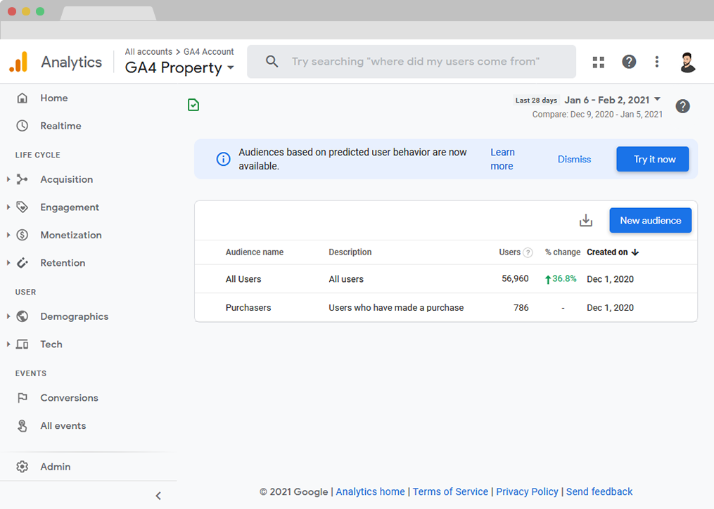
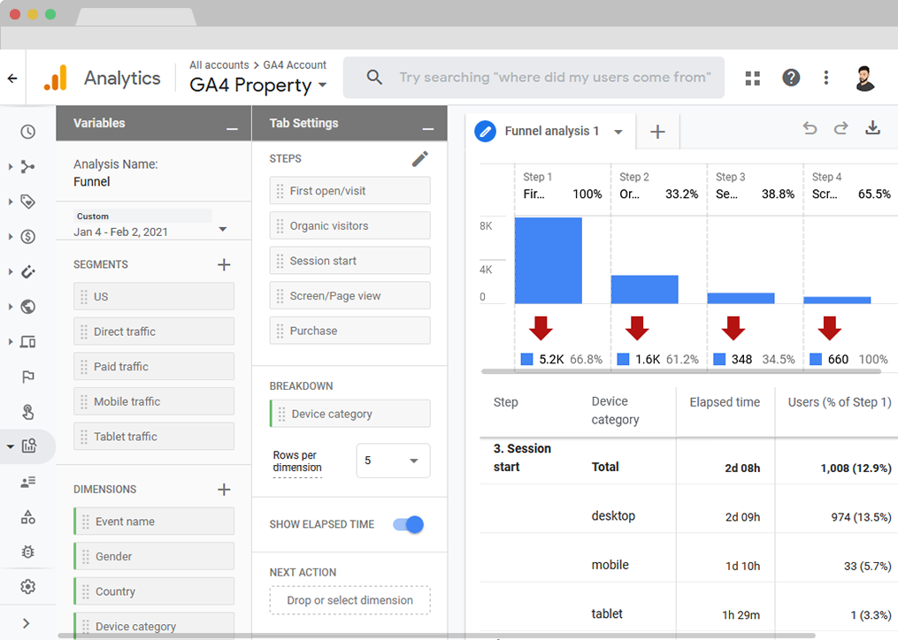
Redefining time-based events.
- Universal Analytics provides great insight into time spent on pages and sessions, however, the insight can be lacking out of the box when it comes to more specific actions users take on your website, such as watching your neat presentation video. GA4 takes this one step further and allows you to set up time measurements for defined actions or sets of actions through its "Elapsed Time" functionality. This way, you can determine how long it takes a user to watch your video, browse the Category Page and finally complete the Checkout Process.
Bringing Web and Mobile together!
- With the advanced capabilities of Google Analytics 4's Data Streams functionality, you can now centralize all your channels under one property, by setting up Data Streams for each one. This means that, if you have a website and mobile app, for example, you have access to the insights from both under the same Google Analytics property, which will allow you to better piece together and analyze a user's journey across your store, whichever device they choose to use in order to make it.
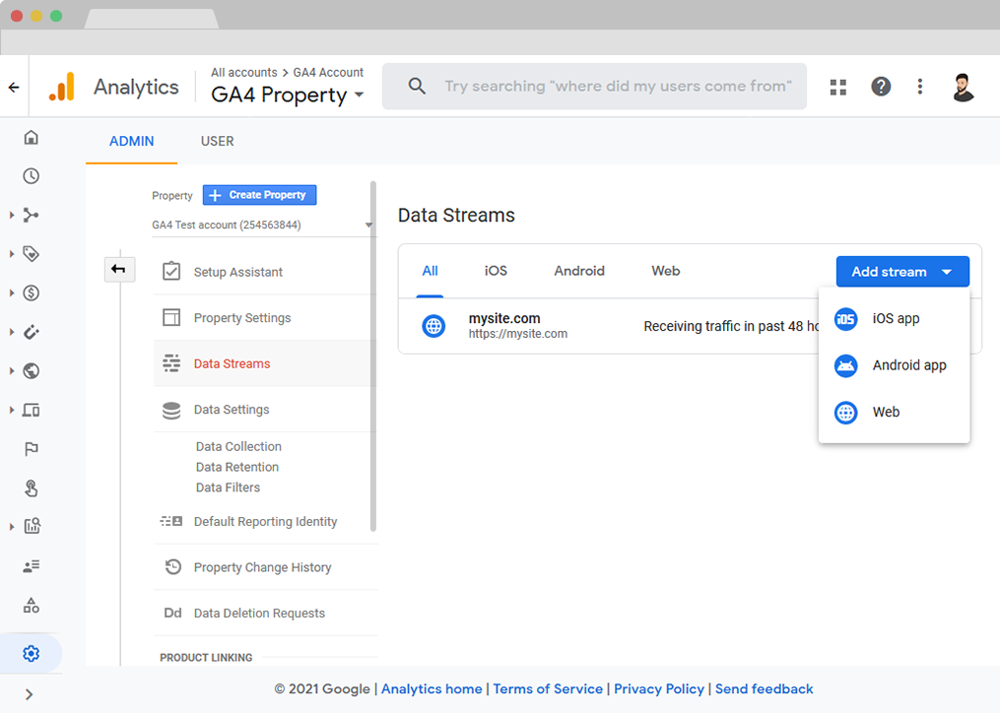
HOW TO INSTALL
The Google Analytics 4 extension is available in two versions: STANDARD and PRO. Both versions are installed via Composer, which is the official and only supported installation method.
Step 1: Prerequisites
- Ensure your Magento version is compatible (2.3.0 - 2.4.8 and all Security Patches)
- Install on a testing/development environment first
- Set Magento to developer mode before installation
- Make sure you have Composer installed on your server
php bin/magento deploy:mode:set developer
Step 2: Access Composer Configuration
Head into the Downloadable Products section of your weltpixel.com account. This is where you'll be able to see your Composer Configuration Commands.
You'll need to have Composer installation enabled for your account. If you don't see the Composer Configuration Commands, please contact our support team.
Step 3: Configure Repository
Run the generated commands from your account. Example commands:
composer config repositories.weltpixel composer https://weltpixel.repo.packagist.com/your-id/
composer config --global --auth http-basic.weltpixel.repo.packagist.com token your-token
These commands will provide you access to the WeltPixel repository. Replace 'your-id' and 'your-token' with the actual values from your account.
Step 4: Install via Composer
Run one of the following commands in your Magento root directory:
For Google Analytics 4 STANDARD:
composer require weltpixel/module-ga4
For Google Analytics 4 PRO:
composer require weltpixel/module-ga4-pro
Step 5: Enable and Setup
Run the following commands:
php bin/magento setup:upgrade php bin/magento setup:di:compile php bin/magento setup:static-content:deploy -f
Step 6: Cache Management
Flush any caches:
php bin/magento cache:flush
Step 7: Production Mode
If your store was in production mode, switch it back:
php bin/magento deploy:mode:set production
Wooohooo! The extension is now installed on your Magento store! Congrats!
How to Upgrade the Extension
- Step 1: Run: composer update (for the appropriate package)
- Step 2: Run setup commands as shown above
- Step 3: Flush cache
Google Analytics 4 (GA4) Hyvä Theme Compatibility Addon (PRO Only)
If you're using the Hyvä Theme with Google Analytics 4 PRO, you'll need to install the compatibility modules via Composer.
Step 1: Prerequisites
Make sure you've installed the Google Analytics 4 PRO extension first.
Step 2: Install Hyvä Compatibility Modules
Install the Hyvä GA4 compatibility module:
composer require weltpixel/module-hyva-ga4
Install the Hyvä GA4 CSP (Content Security Policy) module:
composer require weltpixel/module-hyva-ga4-csp
Step 3: Enable and Setup
Run the setup commands:
php bin/magento setup:upgrade php bin/magento setup:di:compile php bin/magento setup:static-content:deploy -f php bin/magento cache:flush
The addon has no configuration options. Once installed and enabled, the adjustments will automatically apply and provide the necessary compatibility for the Google Analytics 4 PRO module with the Hyvä Theme.
Google Analytics 4 (GA4) Hyvä Theme Compatibility Addon (PRO Only)
If you're using the Hyvä Theme with Google Analytics 4 PRO, you'll need to install the compatibility modules via Composer.
Step 1: Prerequisites
Make sure you've installed the Google Analytics 4 PRO extension first.
Step 2: Install Hyvä Compatibility Modules
Install the Hyvä GA4 compatibility module:
composer require weltpixel/module-hyva-ga4
Install the Hyvä GA4 CSP (Content Security Policy) module:
composer require weltpixel/module-hyva-ga4-csp
Step 3: Enable and Setup
Run the setup commands:
php bin/magento setup:upgrade php bin/magento setup:di:compile php bin/magento setup:static-content:deploy -f php bin/magento cache:flush
The addon has no configuration options. Once installed and enabled, the adjustments will automatically apply and provide the necessary compatibility for the Google Analytics 4 PRO module with the Hyvä Theme.
Google Analytics 4 (GA4) Hyvä Theme Compatibility Addon (PRO Only)
If you're using the Hyvä Theme with Google Analytics 4 PRO, you'll need to install the compatibility modules via Composer.
Step 1: Prerequisites
Make sure you've installed the Google Analytics 4 PRO extension first.
Step 2: Install Hyvä Compatibility Modules
Install the Hyvä GA4 compatibility module:
composer require weltpixel/module-hyva-ga4
Install the Hyvä GA4 CSP (Content Security Policy) module:
composer require weltpixel/module-hyva-ga4-csp
Step 3: Enable and Setup
Run the setup commands:
php bin/magento setup:upgrade php bin/magento setup:di:compile php bin/magento setup:static-content:deploy -f php bin/magento cache:flush
The addon has no configuration options. Once installed and enabled, the adjustments will automatically apply and provide the necessary compatibility for the Google Analytics 4 PRO module with the Hyvä Theme.
Google Analytics 4 (GA4) Hyvä Theme Compatibility Addon (PRO Only)
If you're using the Hyvä Theme with Google Analytics 4 PRO, you'll need to install the compatibility modules via Composer.
Step 1: Prerequisites
Make sure you've installed the Google Analytics 4 PRO extension first.
Step 2: Install Hyvä Compatibility Modules
Install the Hyvä GA4 compatibility module:
composer require weltpixel/module-hyva-ga4
Install the Hyvä GA4 CSP (Content Security Policy) module:
composer require weltpixel/module-hyva-ga4-csp
Step 3: Enable and Setup
Run the setup commands:
php bin/magento setup:upgrade php bin/magento setup:di:compile php bin/magento setup:static-content:deploy -f php bin/magento cache:flush
The addon has no configuration options. Once installed and enabled, the adjustments will automatically apply and provide the necessary compatibility for the Google Analytics 4 PRO module with the Hyvä Theme.
WATCH THE 10-MINUTE CONFIGURATION VIDEO
HOW TO CONFIGURE GOOGLE ANALYTICS 4 (GA4) WITH GTM SUPPORT.
Step 1.
- a. Go to Admin > Store > Configuration > Sales > Google API > Google Analytics > and set this option to [ No ].
- b. Go to Admin > Store > Configuration > Sales > Google API > Google Adwords > and set this option to [ No ].
- c. Go to WeltPixel > Google Analytics 4 Ecommerce > General Configuration > Enable GA4 and set this option to [ Yes ].
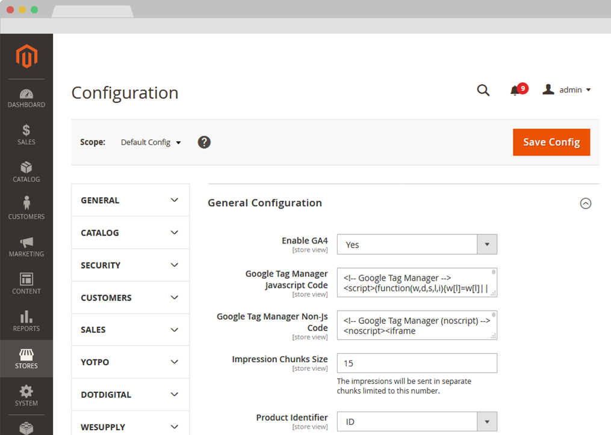
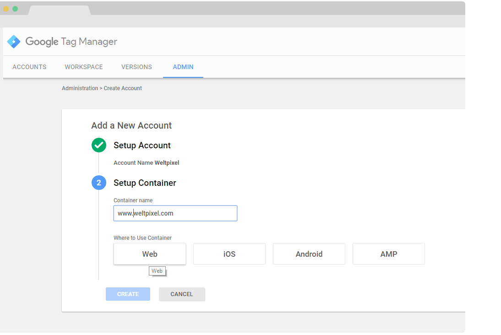
Step 2.
- You need to create a Google Tag Manager account if you don't have one already at this link: Google Tag Manager
- Set up the Account name and the container in your Google Tag Manager account like in the image.
Step 3. HOW TO SET UP GOOGLE ANALYTICS 4 IN MAGENTO 2.
- Once the account is created get the Google Tag Manager (GTM) scripts in admin section of your Magento 2 store WeltPixel > Google Analytics 4 Ecommerce > General Configuration.
You need also to get the code for the "<body>" section.
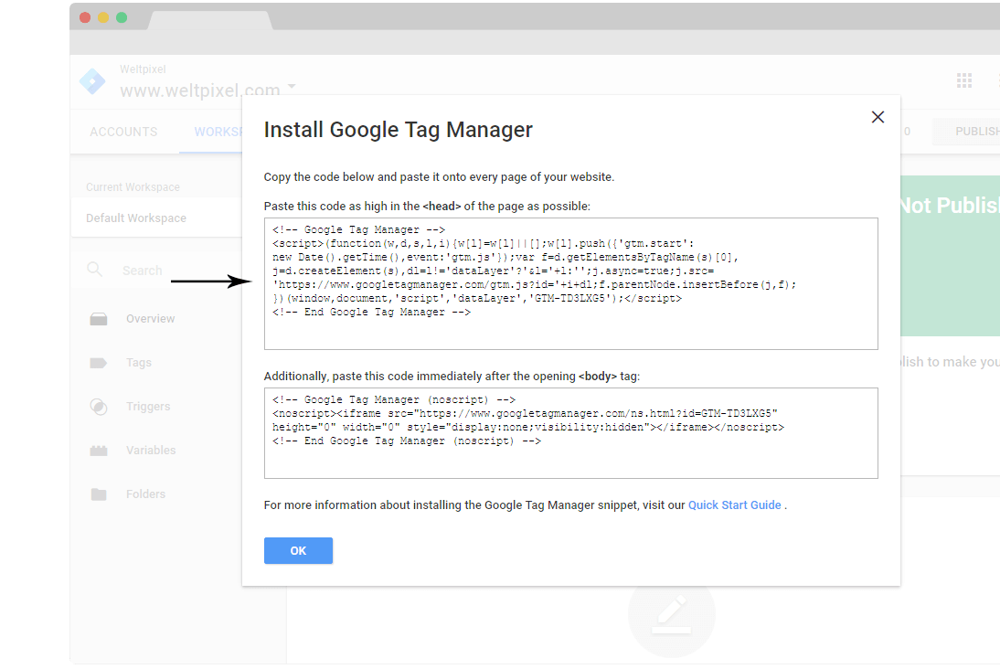
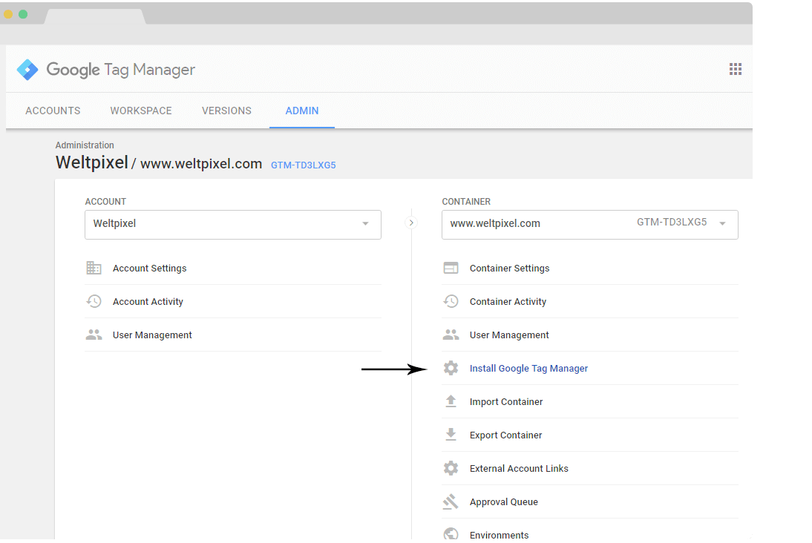
- Go to WeltPixel > Google Analytics 4 Ecommerce > General Configuration > Google Tag Manager Javascript Code and paste the code for "<head>" section in your magento store.
- Then go to WeltPixel > Google Analytics 4 Ecommerce > General Configuration > Google Tag Manager Non-Js Code and paste the code for "<body>" section in your magento store.
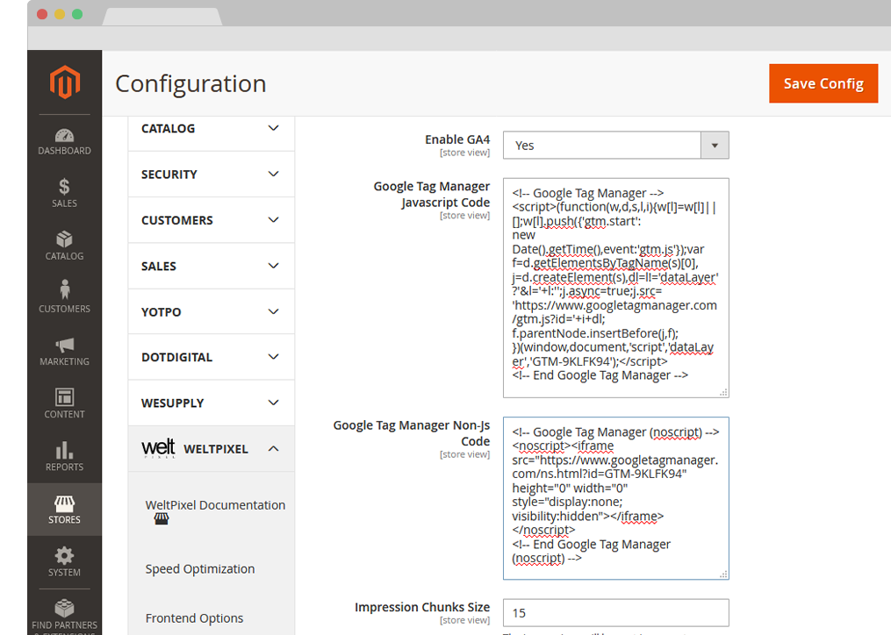
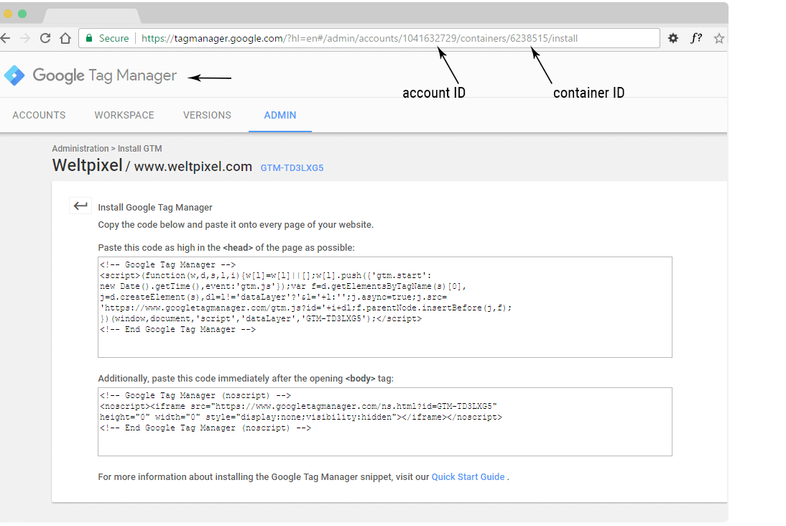
Step 4. HOW TO ADD GOOGLE TAG MANAGER AND GOOGLE ANALYTICS 4 TO MAGENTO 2.
- In Magento admin configure your Google Tag Manager (GTM) API Credentials in order to link your store with your GTM account and generate the default Tags, Triggers and Variables.
-
For this you need to go to WeltPixel > Google Analytics 4 Ecommerce > GTM API Configuration and fill in the Account ID, Container ID and Measurenent ID fields. All this information can be found in your Google Tag Manager and Google Analytics accounts.
- a) Go to Google Tag Manager (GTM) Identify the IDs in your GTM account like in the picture.
-
b) Go to Google Analytics (GA) You can see how to get your Measurement ID from your Google Analytics account.
The Measurement ID is available under GA account > Admin > Data Streams > *Select your Stream* > Measurement ID as you can see in the picture.
- Head back into your Magento Admin section and paste the Account ID, Container ID and Measurement ID into the GTM API Configuration section.
- Save the configuration.
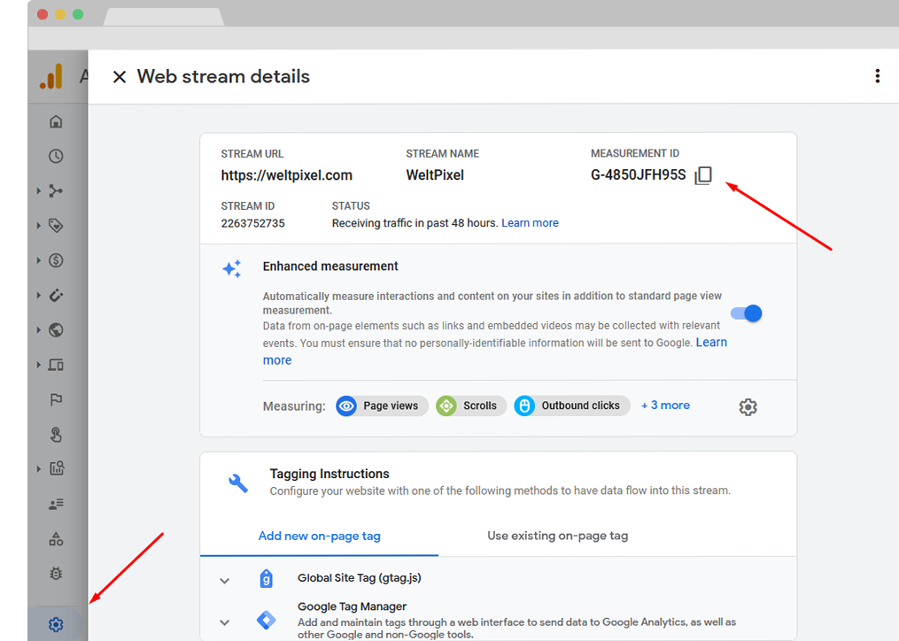
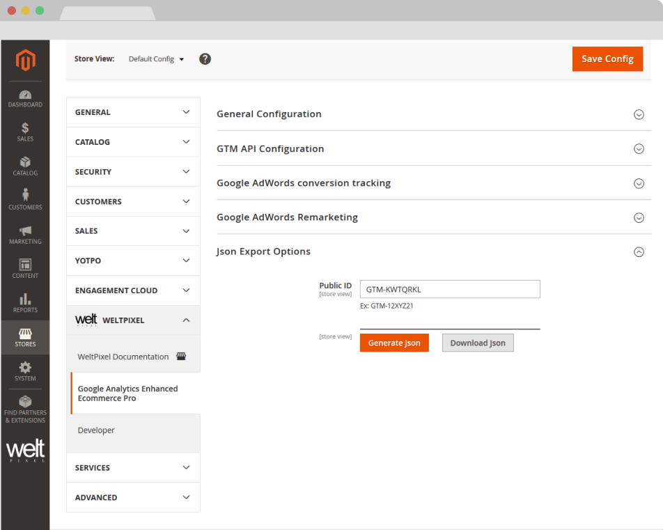
Step 5
The Tag, Trigger and variable generation works via a JSON generation process. The JSON is generated in Magento based on your settings, after which it's imported into Google Tag Manager.
Note: After making any extension configuration changes, remember to re-generate the JSON and re-import and overwrite the existing GTM container to ensure your settings are picked up by Google.
Generate JSON.
-
Go to WeltPixel > Google Analytics 4 Ecommerce > JSON Export Options , fill in your Public ID (it can be found in your GTM account) and hit the Generate Json for Variables, Triggers and Tags button.
You will be notified that the JSON has been generated successfully and a Download JSON button will appear. Click the button to download the generated JSON.
Tag Manager Admin.
-
Go to your Google Tag Manager Dashboard and access the Admin section and choose Import Container
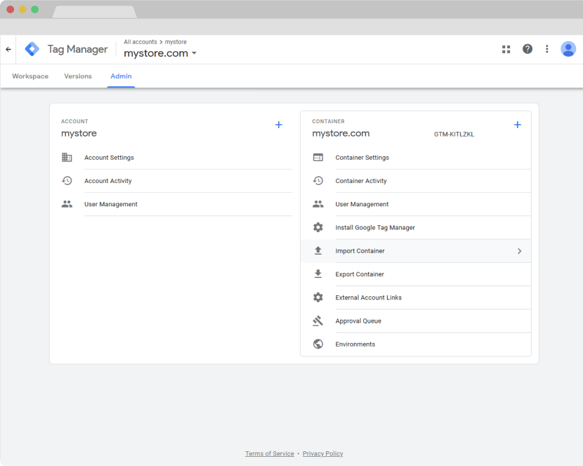
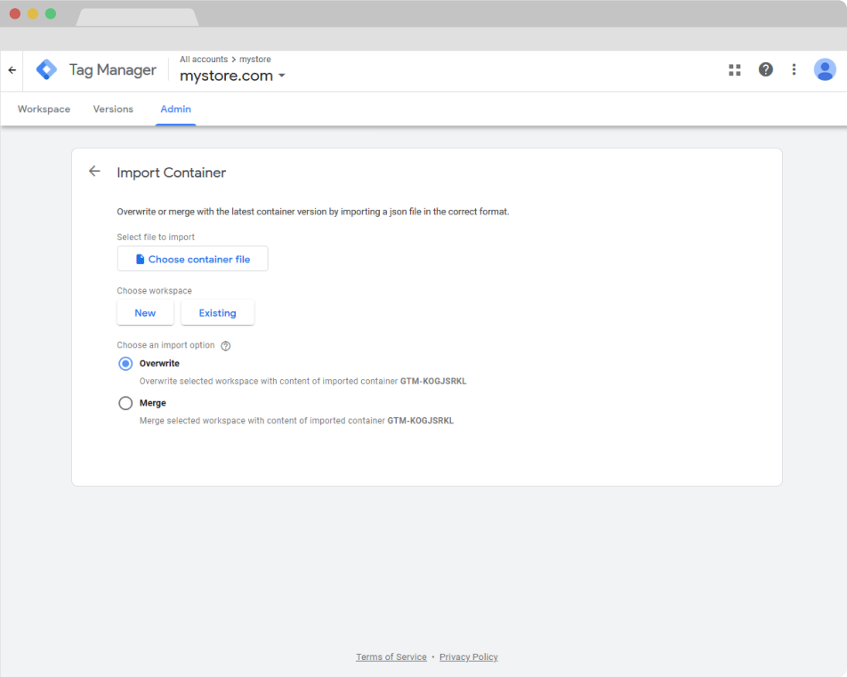
Import JSON.
-
Click on the Choose container file button and find your previously generated and downloaded JSON file. Then, choose a workspace (you can choose an existing workspace or create a new one) and an import option.
When importing your container, you will have the option to merge the imported content with the selected workspace, or overwrite the workspace entirely. Overwriting the selected workspace will remove all your existing tags, triggers and variables in that workspace, and will replace them with the imported container.
Preview and Confirm.
-
After importing the generated JSON, a preview will show up letting you know the number of changes made to the container. There should be Tags, Triggers and Variables created or updated in various amounts depending on your Magento Admin settings. Click on Confirm and you should be done with importing your settings!
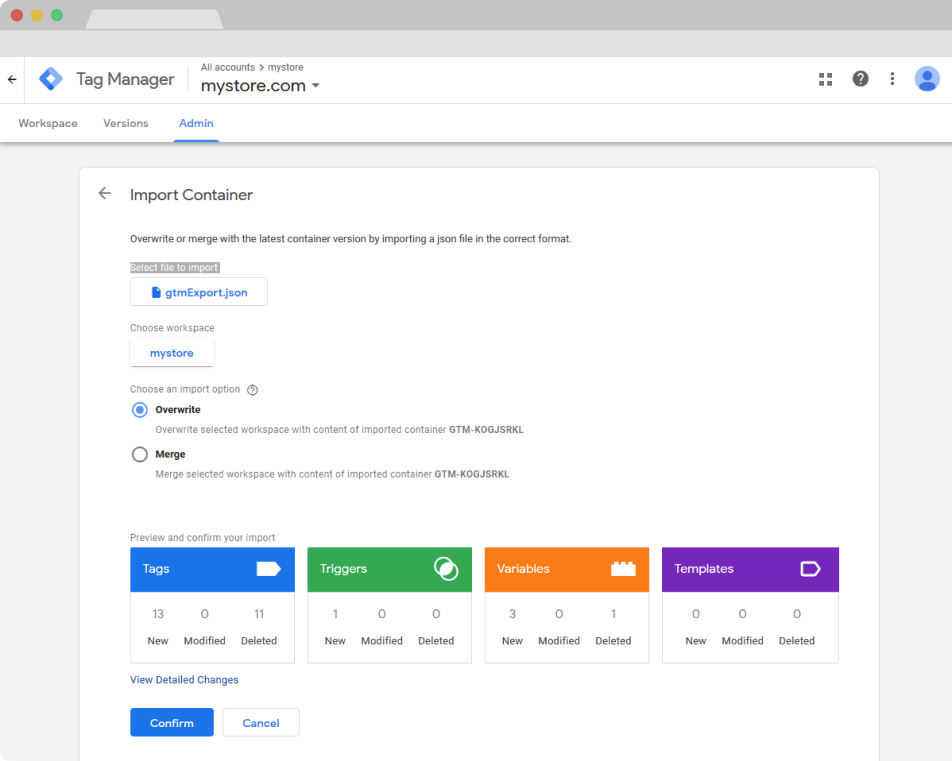
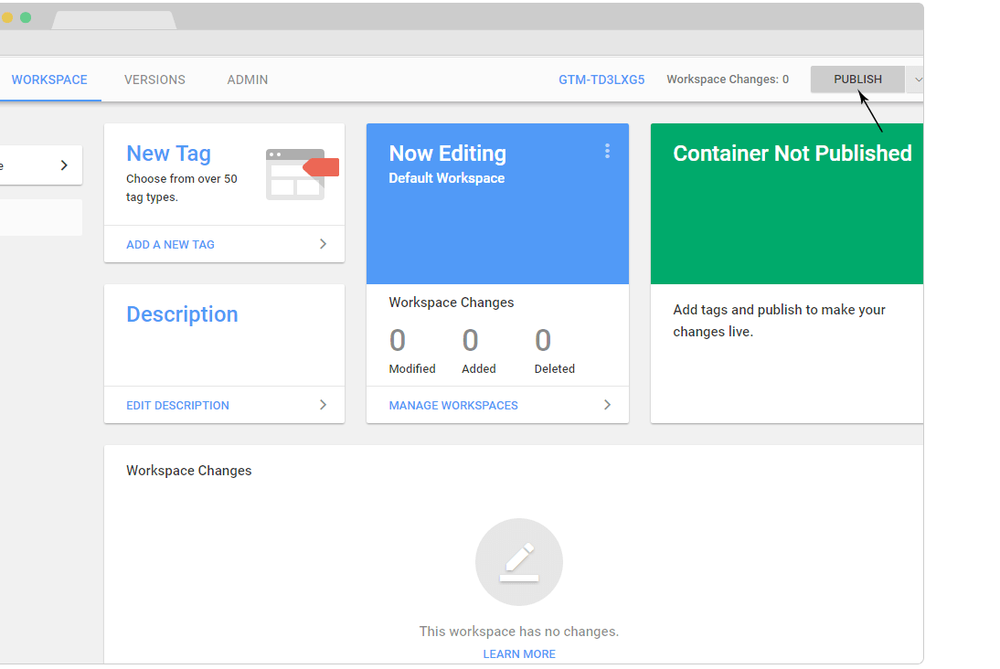
Step 6.
- After all your tags have been created in Google Tag Manager (GTM), go to Google Tag Manager (GTM) account and PUBLISH / SUBMIT all your tags by following the steps from Google Tag Manager.
- ! NOTE: If the container is not published/submitted in your GTM account, no tracking will be available. Make sure to publish your container.
- !! NOTE 2: Displaying statistics in your Google Analytics account based on tracked data could take from 30 minutes from 48 hours according to GTM Documentation. However, real time data should be visible right away if your account is correctly set up.
Measurement Protocol Tracking Configuration (PRO VERSION ONLY).
If you have the PRO version, make sure you do the following setup:
- Enable Measurement Protocol Tracking Configuration: To enable go to Admin -> WeltPixel -> GA4 PRO -> Enable Measurement Protocol Tracking Configuration -> Set to Yes
- Measurement ID: Ex: G-XCXCCXXC Find this information in Google Analytics 4 -> Admin Settings -> Data Stream -> Open the desired Data Stream -> MEASUREMENT ID (it is the same ID generated in Step 4b)
- API Secret: Find this information in Google Analytics 4 -> Admin Settings -> Data Stream -> Open the desired Data Stream -> Measurement Protocol API secrets -> create a new API secret key and paste the value into this field
-
Track Events: Select the Events that you need: Purchase / Refund / Sign Up / Login / View Item / View Item List / Select Item / Search / Add to WishList / Add to Cart / View Cart / Begin Checkout / Add Payment Ingo / Add Shipping Info
Note: If you are using Client Side Tracking in conjunction with Measurement Protocol, make sure that you only track events on one side or another. For example, by having the "purchase" tag enabled on client side as well as via measurement protocol, 1 transaction will be triggered twice and it will result in duplicate transactions. You can check this by going to Google tag Manager -> Tags -> Select the Tags that you added in Track Events and click Pause (example image below)
- Enable Client ID Fallback via gtag.js [ Yes / No ] - May assist with attribution when using Cookie Restriction Policies. When enabled, a lightweight gtag.js instance is loaded to retrieve the GA4 client_id directly from the Google tag when the _ga cookie is unavailable (e.g. due to cookie consent restrictions or ad blockers). This ensures Measurement Protocol events are sent with a valid client_id even when cookies are blocked. The gtag.js instance runs on an isolated dataLayer and should not interfere with your existing GTM setup.
- Send User-ID Yes/No - Including the User ID allows for more granular and accurate connection of user counts and behavior across different sessions as well as various devices and platforms.
- Send User Provided Data (Enhanced Conversions) Yes/No - Enable to send a User-Provided Data object for Purchase events via the Measurement Protocol.
- Send User Properties with enabled events Yes/No - If set to Yes, a User Properties object will be sent to Google Analytics for each enabled Measurement Protocol event, containing data that can be used to create Custom Dimensions.
-
Select User Properties to send: Select the User Properties that you want to send to Google Analytics 4: Browser / Browser Version / Platform (Operating System) / Customer Group
Note:When creating Custom Dimensions for the enabled User Properties, use browser, browser_version, platform and customer_group in the User Property field.
- Track Only Specific Customer Groups: Yes/No - If set to Yes, only selected customer groups will be tracked by GA4 server-side events.
- Automatically disable data layer for enabled measurement protocol events: Yes/No - To avoid any chance of duplicate events to be sent, you must choose which event is sent via Measurement Protocol or via Data Layer. By enabling this option we automatically disable Data Layer for enabled Measurement protocol events, therefore even existing GTM tags will not fire because the data layer is not sent.
- Enable File Log: Yes/No - Enable push data log in ga4.log file
- Log consent state for enabled Measurement Protocol events [ Yes / No ] - If set to Yes, an additional piece of information is logged to the ga4.log file in var/log which shows the values of the Consent Mode v2 states at the moment the event was sent. This can be useful for debugging issues related to event attribution. Requires both Enable Measurement Protocol Tracking and Enable File Log to be set to Yes.
- Enable Debug Collect: Yes/No - Enable push of data to https://www.google-analytics.com/debug/mp/collect
- Use Redis for caching of extension data (if Redis is enabled) Yes/No - If set to Yes, the extension will use Redis for caching of extension data. This is useful for large stores with a lot of traffic.
- Send eCommerce Event Data to multiple endpoints Yes/No - If set to Yes, you'll be able to add additional GA4 property IDs to which you want to send eCommerce event data to. You'll need the ID and API key of each additional property you want to add. Note: Adding a new property here will only send the enabled eCommerce events in the Measurement Protocol configuration. If you need to also send Page View events, in order to stitch data and ensure attribution, you'll also need to load a separate GTM container by adding it to the Google Tag Manager Javascript Code and Google Tag Manager Non-Js Code sections above.
- Properties Configuration - Add additional properties here. You'll need the ID and API secret of each additional property you want to add.
- Save the configuration.
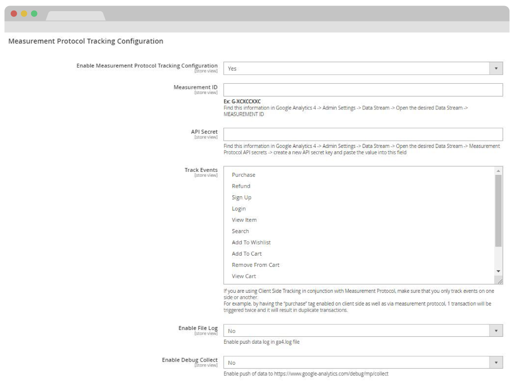
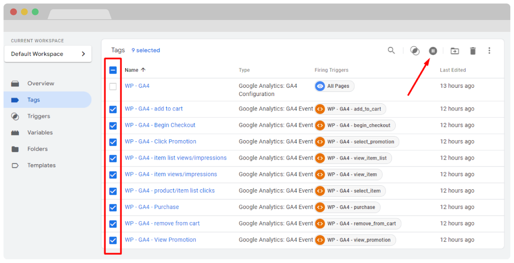
Note: If you've enabled the Automatically disable data layer for enabled measurement protocol events option, you can skip this step.
- To avoid duplicate transactions go to your Google tag Manager -> Tags -> Select the Tags that you added in Track Events and Pause each client side event that is also enabled under Track Events section.
Note: Ensure you don't disable the main Analytics Tag, labeled WP - GA4, as this tag is required for tracking sessions, page views and other important user metrics.
META (FACEBOOK) PIXEL TRACKING (PRO VERSION ONLY).
If you're running the PRO version of the module, and want to integrate with Meta Pixel, you can do so by following the steps below:
- Enable Meta Pixel Tracking: To enable go to Admin → WeltPixel → Google Analytics 4 eCommerce PRO GTM Settings → Meta Pixel Tracking Settings → Meta Pixel Tracking Configuration and set the Enable Meta Pixel Tracking option to Yes.
- Meta Pixel Tracking Javascript Code: Get your Meta Pixel Tracking Javascript Code from your Facebook Business Manager account and paste it here. More details about how to find this code can be found in the Meta (Facebook) Documentation.
-
Track Events: Select the Events that you want to track:
- Purchase
- AddPaymentInfo
- AddToCart
- AddToWishlist
- InitiateCheckout
- Search
- ViewContent
- ViewCategory
- Product Identifier [ ID / SKU ]: Choose the Product Identifier type you want to send to Facebook for enabled events.
Grand Total Calculation Settings.
Tax calculation settings become available if Order Success Page Total Calculation is set to Grandtotal.
- Order Success Page Total Calculation Default (Uses GA4-level settings / Grandtotal / Subtotal).
- Exclude Tax From Transaction Yes/No - Choose whether to send transaction value with or without tax. This applies only to Purchase events.
- Exclude Shipping charges from Transaction Yes/No - Choose whether to include or exclude Shipping charge values from Purchase events. Setting this option to Yes deducts the Shipping value from the Grand Total.
Save the configuration and flush the Magento Cache.
Meta Pixel Server-Side Tracking via Conversions API (CAPI)
With the PRO version of the Google Analytics 4 extension, you can integrate with Meta Pixel's Conversions API. To do so, you'll need to install and enable the Meta Pixel Conversions API (CAPI) Addon. Once the addon is enabled, simply follow the instructions in the addon's User Guide to configure it and begin sending server-side data to Meta. The benefits of doing so are substantial and include:
- Optimized Ad Targeting - Efficiently utilize a broader, more accurate data set to properly target ads to your user base.
- Decreased Cost per Result - Streamline your tracking data to maximize the efficiency of your ads, as well as increase conversion rate & revenue.
- Effectively Measured Outcomes - Ensure you're taking the proper decisions to drive growth and streamline workflows.
- More accurate tracking - Bypass traditional client-side tracking limitations with a server-side implementation.
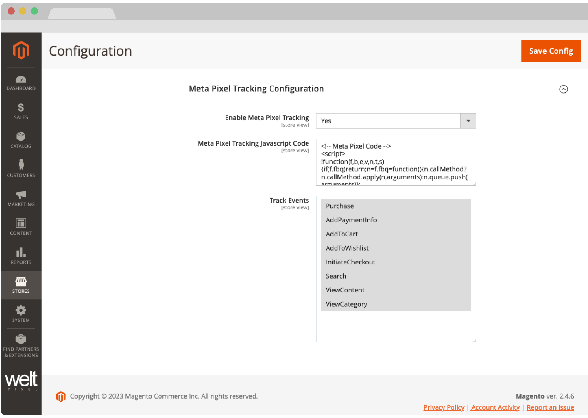
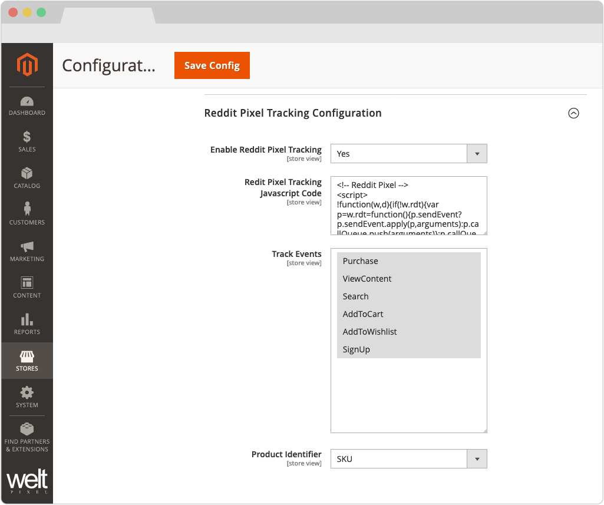
REDDIT PIXEL TRACKING (PRO VERSION ONLY).
If you're running the PRO version of the module, and want to integrate with Reddit Pixel, you can do so by following the steps below:
- Enable Reddit Pixel Tracking: To enable go to Admin → WeltPixel → Google Analytics 4 eCommerce PRO GTM Settings → Reddit Pixel Tracking Settings → Reddit Pixel Tracking Configuration and set the Enable Reddit Pixel Tracking option to Yes.
- Reddit Pixel Tracking Javascript Code: Get your Reddit Pixel Tracking Javascript Code from your Reddit Ads account and paste it here. More details about how to find this code can be found in the Reddit Business Documentation.
-
Track Events: Select the Events that you want to track:
- Purchase
- ViewContent
- Search
- AddToCart
- AddToWishlist
- SignUp
- Product Identifier [ ID / SKU ]: Choose the Product Identifier type you want to send to Reddit for enabled events.
Grand Total Calculation Settings.
Tax calculation settings become available if Order Success Page Total Calculation is set to Grandtotal.
- Order Success Page Total Calculation Default (Uses GA4-level settings / Grandtotal / Subtotal).
- Exclude Tax From Transaction Yes/No - Choose whether to send transaction value with or without tax. This applies only to Purchase events.
- Exclude Shipping charges from Transaction Yes/No - Choose whether to include or exclude Shipping charge values from Purchase events. Setting this option to Yes deducts the Shipping value from the Grand Total.
Save the configuration and flush the Magento Cache.
Reddit Pixel Server-Side Tracking via Conversions API (CAPI)
With the PRO version of the Google Analytics 4 extension, you can integrate with Reddit Pixel's Conversions API. To do so, you'll need to install and enable the Reddit Pixel Conversions API (CAPI) Addon. Once the addon is enabled, simply follow the instructions in the addon's User Guide to configure it and begin sending server-side data to Reddit. The benefits of doing so are substantial and include:
- Stronger campaign performance.
- Improved measurement.
- Better user targeting.
- Increased accuracy for better ad optimization.
TIKTOK PIXEL TRACKING (PRO VERSION ONLY).
If you're running the PRO version of the module, and want to integrate with TikTok Pixel, you can do so by following the steps below:
- Enable TikTok Pixel Tracking: To enable go to Admin → WeltPixel → Google Analytics 4 eCommerce PRO GTM Settings → TikTok Pixel Tracking Settings → TikTok Pixel Tracking Configuration and set the Enable TikTok Pixel Tracking option to Yes.
- TikTok Pixel Base Tracking Code: Get your TikTok Pixel Tracking Javascript Code from your TikTok Ads account and paste it here. More details about how to find this code can be found in the TikTok Ads Documentation.
-
Track Events: Select the Events that you want to track:
- ViewContent
- AddToCart
- AddToWishlist
- InitiateCheckout
- Search
- AddPaymentInfo
- PlaceAnOrder
- CompletePayment
- Purchase
- Product Identifier [ ID / SKU ]: Choose the Product Identifier type you want to send to TikTok for enabled events.
Grand Total Calculation Settings.
Tax calculation settings become available if Order Success Page Total Calculation is set to Grandtotal.
- Order Success Page Total Calculation Default (Uses GA4-level settings / Grandtotal / Subtotal).
- Exclude Tax From Transaction Yes/No - Choose whether to send transaction value with or without tax. This applies only to Purchase events.
- Exclude Shipping charges from Transaction Yes/No - Choose whether to include or exclude Shipping charge values from Purchase events. Setting this option to Yes deducts the Shipping value from the Grand Total.
Save the configuration and flush the Magento Cache.
TikTok Pixel Server-Side Tracking via Events API
With the PRO version of the Google Analytics 4 extension, you can integrate with TikTok Pixel's Events API. To do so, you'll need to install and enable the TikTok Pixel Events API Addon. Once the addon is enabled, simply follow the instructions in the addon's User Guide to configure it and begin sending server-side data to TikTok. The benefits of doing so are substantial and include:
- Improved targeting and ad deliverability - With TikTok Events API, advertisers can bypass the obstacles of browser limitations & inconsistencies, ensuring a more accurate and complete dataset is sent to TikTok, which is leveraged for measurement, optimization, and targeting.
- Granular control over shared data - TikTok's Events API ensures advertisers are only required to share the data that's absolutely necessary in order to meet and exceed marketing goals.
- Future-proof marketing efforts - Combining a server-side implementation with a frontend TikTok Pixel ensures a sustainable transition into the evolution of the advertising industry.
- Data consolidation into a single API - Increase efficiency and consistency by sending events to TikTok from all your channels.
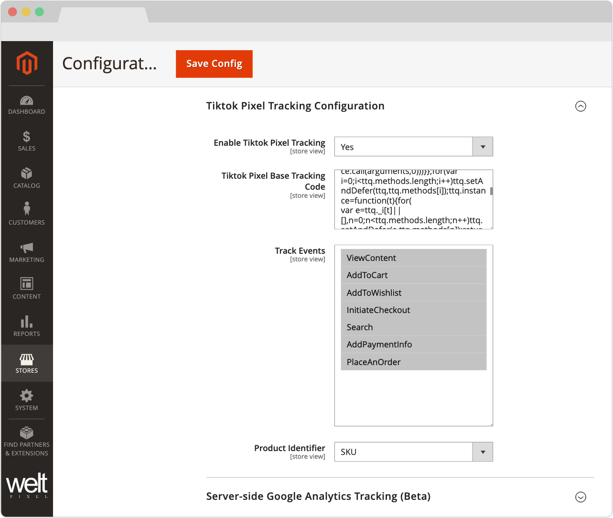
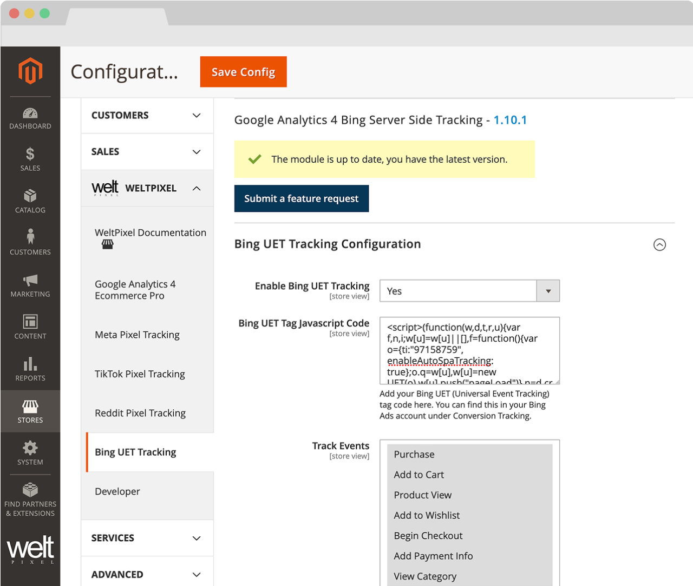
MICROSOFT ADS (BING UET) TRACKING (PRO VERSION ONLY).
If you're running the PRO version of the module, and want to integrate with Microsoft Ads (BING UET), you can do so by following the steps below:
- Enable Bing UET Tracking: To enable go to Admin → WeltPixel → Google Analytics 4 eCommerce PRO GTM Settings → Bing UET Tracking Settings → Bing UET Tracking Configuration and set the Enable Bing UET Tracking option to Yes.
- Bing UET Javascript Code:Add your Bing UET (Universal Event Tracking) tag code here. You can find this in your Bing Ads account under Conversion Tracking. More details about how to find this code can be found in the Microsoft Ads Documentation.
-
Track Events: Select the Events that you want to track:
- Purchase
- Add to Cart
- Product View
- Add to Wishlist
- Begin Checkout
- Add Payment Info
- View Category
- Search
- Signup
- Product Identifier [ ID / SKU ]: Choose the Product Identifier type you want to send to Microsoft Ads for enabled events.
Grand Total Calculation Settings.
Tax calculation settings become available if Order Success Page Total Calculation is set to Grandtotal.
- Order Success Page Total Calculation Default (Uses GA4-level settings / Grandtotal / Subtotal).
- Exclude Tax From Transaction Yes/No - Choose whether to send transaction value with or without tax. This applies only to Purchase events.
- Exclude Shipping charges from Transaction Yes/No - Choose whether to include or exclude Shipping charge values from Purchase events. Setting this option to Yes deducts the Shipping value from the Grand Total.
Save the configuration and flush the Magento Cache.
Microsoft Ads (Bing UET) Server-Side Tracking via API
With the PRO version of the Google Analytics 4 extension, you can integrate with the Microsoft Ads API. To do so, you'll need to install and enable the Microsoft Ads Pixel (Bing UET) API Addon. Once the addon is enabled, simply follow the instructions in the addon's User Guide to configure it and begin sending server-side data to Microsoft Ads. The benefits of doing so are substantial and include:
- Enhanced tracking accuracy - Microsoft Ads (Bing UET) overcomes browser limitations and tracking inconsistencies by implementing server-side tracking, ensuring that a more complete and accurate dataset is collected.
- Privacy-focused data sharing - With Microsoft Ads (Bing UET), you maintain control over your data, sharing only what's necessary to achieve your marketing objectives while respecting user privacy preferences.
- Adaptable to evolving digital landscape - The combination of server-side implementation with frontend tracking creates a resilient marketing infrastructure that can adapt to industry changes in privacy regulations and browser policies.
- Unified data collection - Streamline your marketing operations by consolidating event data from multiple channels into a single API, improving efficiency and ensuring consistent measurement across your entire business.
Server-Side JSON Generation (BETA)
Starting with version 1.14.7, the extension is capable of generating Tags, Triggers and Variables for a Google Tag Manager Server-Side container, marking the beginning of the module's true Server-Side Google Analytics integration. The integration is currently in its beta phase and the functionality is limited to generating a JSON file which can be imported into an already created and configured Google Tag Manager Server-Side container to create the Tags, Triggers and Variables required for eCommerce event tracking via the server container.
The feature, in its current iteration, is geared towards advanced users who already know how to set up a server-side tracking configuration. In the future, the process will be extended and modified to feature a full plug-and-play integration process.
To use the functionality, you'll need the following:
- An already-provisioned Google Tag Manager Server-Side Container
- A fully configured Google Tag Manger Client-Side Container
- Your GA4 Client-Side Tag configured to send data to your Server-Side container
Once the conditions above are satisfied, you can simply generate the JSON via the extension, which will create a container file with already-configured Tags, Triggers and Variables that can be imported into the Server-Side container.
In future versions, we'll also be including more in-depth guides related to Server-Side setup, however, for the time being, if you need more information, you can check out the Google Documentation on the subject.
Success.
-
Woohoo, the extension is configured!
Note: Your GA and GTM account are now configured with our pre-generated settings and ready to receive valuable information from your Magento 2 store! You can now gather valuable data and take data driven decisions! Congrats!
Note 2: If you would like to receive even more personalized tracking data, you can always extend your GTM and GA default configurations from your account. If you would like our Google Certified Specialists to help you with that please contact our support for a quote.
General Configuration.
- Google Tag Manager Javascript Code - The main tracking code for Google Tag Manager. This code is automatically placed in the head section of your Magento store.
- Google Tag Manager Non-Js Code - The non-Javascript code for Google Tag Manager. This code is automatically placed in the body section of your Magento store.
- Consent Management Method [ Magento Cookie Restriction Mode / External CMP ] - Choose how consent is handled for the GTM container. Magento Cookie Restriction Mode (default): Uses Magento's built-in cookie banner. GTM loads only after the user accepts cookies (Basic Consent Mode). External CMP: Use when you have a third-party CMP (Cookiebot, OneTrust, CookieYes, etc.). GTM always loads, and the CMP handles consent via Google Consent Mode v2 (Advanced Consent Mode, recommended for EEA).
- Load dataLayer before GTM Container - This is a troubleshooting option. If you're experiencing inconsistent data flow in Google Analytics or Google Ads for tags that are set to fire on a Page View trigger, you can set this option to Yes as a potential solution.
- Script Attributes - This setting can be used to add custom attributes to the extension's script tags. The primary use for this setting is to ensure the extension's script tags stay in the section of the store in cases in which you have 3rd party JS optimization functionalities that push scripts into the page footer. Each attribute needs to be a separate entry, and you can use data-attributes as well. Examples of usage: nodefer, data-javascript-move="false".
- Enable dataLayer frontend Preview/Debug [ Yes / No ] - Set this option to Yes to enable a button which can be used to trigger a preview window on the frontend which shows the current values of the dataLayer and is updated as the dataLayer is updated.
- IP Address Restriction - Add IP ranges in this field (comma separated) to limit the display of the dataLayer preview to certain IP addresses only. Leave blank for no restrictions.
- Impression Chunks Size - Allows you to break up the View Item List event payload into smaller chunks. We recommend limiting it to 15.
- Product identifier [ SKU / ID ] - Choose whether to use the Product ID or the SKU as the product identifier in Google Analytics.
- Currency And Amount Scope - Choose whether to send the Base or Display currency to Google Analytics.
- Enable Brand - Set this option to Yes if you'd like to send a brand attribute with the product data.
- Enable Variant - Set this option to Yes if you'd like to send the product variant with the product data.
- Item Variant - Choose whether to send the Child Product SKU as the variant or a string consisting of a combination of the Product Configurations, eg "Size: S | Color: Black".
- Order Success Page Total Calculation [ Subtotal / Grandtotal ] - Calculates total order value on the Success Page based on the Subtotal or Grand total.
- Exclude Tax From Product Prices [ Yes / No ] - Choose whether to send price values with or without tax to Google Analytics. This applies to all events that involve specific products, apart from Purchase events.
- Exclude Tax From Transaction [ Yes / No ] - Choose whether to send transaction value with or without tax to Google Analytics. This applies only to Purchase events.
- Exclude Shipping From Transaction [ Yes / No ] - Exclude the shipping amount from the purchase event.
- Include Tax in Shipping Value [ Yes / No ] - Choose whether to include tax in the shipping value for Purchase events.
- Exclude Orders with 0 Value [ Yes / No ] - Set this option to Yes to ensure no purchase event is sent for orders with a value of 0.
- Exclude Orders By Status [ Yes / No ] - If this option is set to Yes, you'll be able to select a number of statuses for which a purchase event will not be sent. This is useful if you want to exclude transactions that are generated in a certain status, such as Pending, Processing, Canceled, etc
- Exclude Categories - Select categories to be excluded from the GA4 item_category payload. This applies to both the dataLayer and server-side Measurement Protocol payloads. Selected categories will not be included in any event that sends category data. This is useful if you have internal or organizational categories that should not appear in your analytics data.
- Change Category Depth [ Yes / No ] - Set this option to Yes to enable the ability to limit the number of category levels sent in the GA4 item_category parameters.
- Category Depth Limit - Specify the maximum number of categories that should be sent in the GA4 item_category parameters (e.g., 5). Leave empty for no limit. Only visible when Change Category Depth is set to Yes.
- Category Depth Direction [ Top to Bottom / Bottom to Top ] - Determine if categories should be kept from Top to Bottom or Bottom to Top when the depth is limited. Only visible when Change Category Depth is set to Yes.
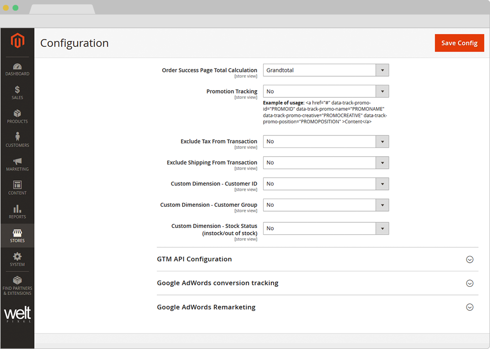
- Checkout Page Paths - If you're using custom checkout, and the checkout page path is different from the default magento path: 'checkout/index/index', you can list it here to make sure the transaction data is sent to Google Analytics.
- Success Page Paths - If you're using a custom checkout, and the success page path is different from the default Magento path: 'checkout/onepage/success', you can list it here to make sure the transaction data is sent to Google Analytics.
- Measure Product Clicks - This option allows 'Product Click' tracking on Category and Search pages, as well as on Related, Up-Sell and Cross-Sell product grids. If this option is enabled, it rewrites the Magento_Catalog::product/list.phtml and Magento_Catalog::product/list/list.phtml files. If you're using a custom theme/extension that already rewrites these templates, check out this article for information on how you can make the necessary compatibility adjustments: How to solve GTM compatibility issues
-
Promotion Tracking [ Yes / No ] - Example of usage:
<a href="#" data-track-promo-id="PROMOID" data-track-promo-name="PROMONAME" data-track-promo-creative="PROMOCREATIVE" data-track-promo-position="PROMOPOSITION">Content </a> - Persistent datalayer expiry time - The specified value represents minutes.
- Child vs Parent - Choose whether to send the Child or Parent product identifier to Google Analytics.
- Send all simple products on View Item - Choose whether to send all Simple Configurations for Configurable Products via the View Item event.
- Use Secure Cookies - Choose whether to use Secure Cookies. This option should only be set to Yes if your whole website is on HTTPS.
- Load Product List Block - Set this option to Yes only if you're having issues on Category/Search Pages, such as ignored product limit per page settings or incorrect sorting after enabling the extension. This is usually only required if you're using a 3rd party Search Engine or have modifications/customizations applied to the default product listing on Category/Search Pages.
- Custom Dimension - Customer ID [ Yes / No ] - Send the Customer ID to Google Analytics as a Custom Dimension.
- Custom Dimension - Customer Group [ Yes / No ] - Send the Customer Group to Google Analytics as a Custom Dimension.
- Custom Dimension - Page Name [ Yes / No ] - Send the Page Name to Google Analytics as a Custom Dimension.
- Custom Dimension - Page Type [ Yes / No ] - Send the Page Type to Google Analytics as a Custom Dimension.
- Custom Dimension - Stock Status [ Yes / No ] - Send the product Stock Status to Google Analytics as a Custom Dimension.
- Custom Dimension - Reviews Count [ Yes / No ] - Send the product Reviews Count to Google Analytics as a Custom Dimension.
- Custom Dimension - Reviews Score [ Yes / No ] - Send the product Reviews Score to Google Analytics as a Custom Dimension.
- Custom Dimension - Sale Product [ Yes / No ] - Send the value of Magento's Sale attribute for the product in question to Google Analytics as a Custom Dimension.
You're able to send up to 5 additional Custom Attributes as Custom Dimensions. For more details about how to use Custom Dimensions, check out this Support Center article: Google Analytics 4 - Using Custom Dimensions
GTM API Configuration.
- Account ID - Must be set as seen in Step 4 from Configure section
- Container ID - Must be set as seen in Step 4 from Configure section
- Measurement ID - Must be set as seen in Step 4 from Configure section
- I.P Anonymization [ Yes / No ] - Allows website owners to request that all of their users' IP addresses are anonymized. It help website owners comply with their own privacy policies or, in some countries, recommendations from local data protection authorities, which may prevent the storage of full IP address information.
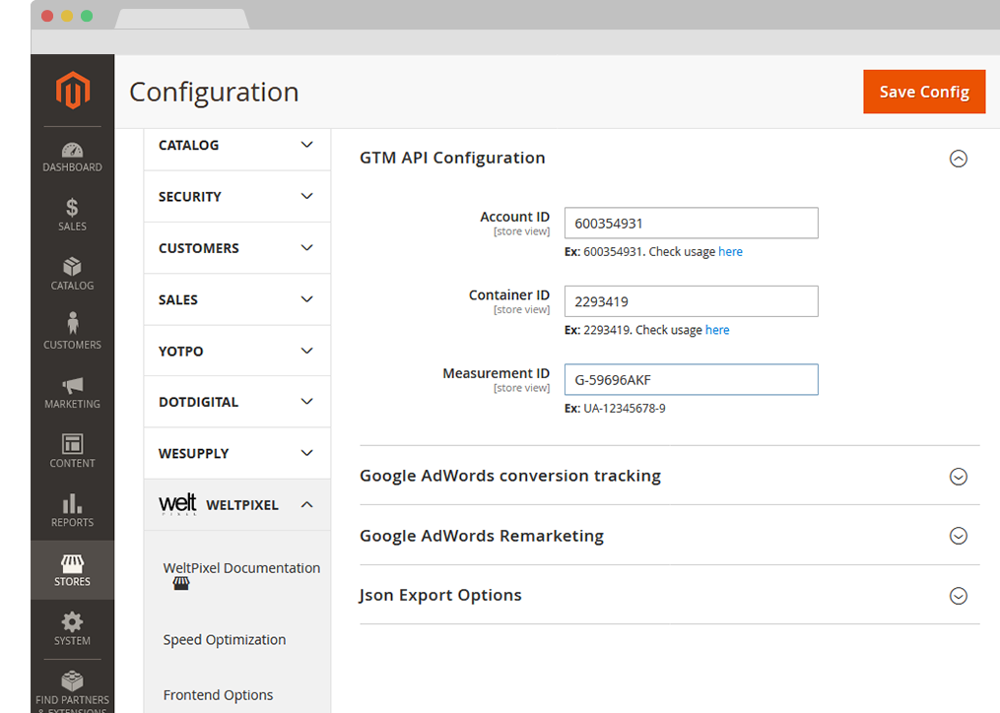
First-Party Tracking (Ad Blocker Bypass) (PRO VERSION ONLY).
First-Party Tracking uses Google Tag Gateway (fps.goog) to serve GTM and GA4 through your own domain, bypassing ad blockers. This requires a Cloudflare Worker (or equivalent proxy) configured on your infrastructure. When enabled, the extension loads the GTM container through your proxy with parameter obfuscation, and intercepts GA4 collection hits to route them through the proxy as well. This ensures tracking works even when visitors use ad blockers.
Note: This is an advanced, experimental feature. Thorough testing on your own environment is recommended before committing to using it.
- Enable First-Party Tracking [ Yes / No ] - Enable to load GTM and GA4 through your first-party proxy, bypassing ad blockers.
- Measurement Path - The URL path configured in your Cloudflare Worker or proxy. Must start with a forward slash. Example: /metrics or /metricsyourstore. This path must match the route configured in your Worker.
- GA4 Measurement ID - Your GA4 Measurement ID (from Google Analytics 4 → Admin → Data Streams → your stream). Required for the Cloudflare Worker. Example: G-XXXXXXXXX
- GTM Container ID - Your Google Tag Manager Container ID. Example: GTM-XXXXXXX
- Proxy Google Ads Requests [ Yes / No ] - Also intercept and proxy Google Ads conversion tracking requests (googleadservices.com, googlesyndication.com, doubleclick.net). Recommended if you use Google Ads Conversion Tracking. For best results, link your Google Ads and GA4 accounts and import GA4 purchase events as conversions.
- Cloudflare Worker Code - A read-only field that displays the Cloudflare Worker script generated by the extension. Copy this code into your Cloudflare Worker, then add a route: yourdomain.com{measurement_path}/* → select your Worker. Do NOT use Cloudflare's built-in "Google Tag Gateway" feature.
Setup Requirements:
- Configure a Cloudflare Worker (or Nginx/Apache proxy) on your domain.
- The Worker must forward requests to {MEASUREMENT_ID}.fps.goog.
- Set the Measurement Path to match your Worker route.
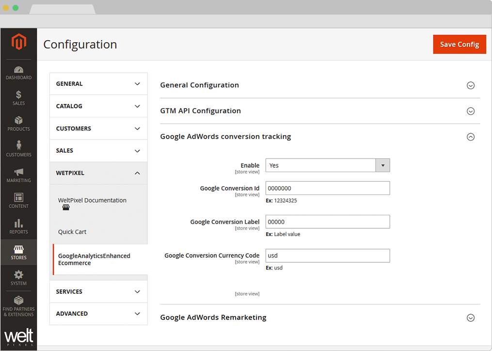
Google Ads conversion tracking.
- Enable [ Yes / No ] - Enables Google Ads Conversion tracking
- Send separate dataLayer event for Google Ads Conversion - Set this option to Yes to enable a new dataLayer event for Google Ads Conversions, which will be used as a trigger for the Google Ads Conversion Tracking Tag. This is only required if you find your tag isn't picking up the correct transaction details from the dataLayer. If you change this setting, remember to regenerate and reimport the JSON container into Google Tag Manager.
- Google Ads Conversion ID - You need a Google Ads account adwords.google.com. Follow the Google documentation on how to find the Conversion ID for Google Ads.
- Google Ads Conversion Label - Follow the Google documentation on how to find Conversion Label for Google Ads.
- Google Conversion Currency Code - Fill in the currency used in your Google Ads account. e.g. usd
- Exclude Orders with 0 value [ Yes / No ] - Orders with value 0.00 can be excluded from conversion tracking if you set this option to Yes.
- Enable Enhanced Conversions - If set to Yes, the dataLayer will be populated with the Email and Phone Number used in the checkout process, which are sent to Google Ads via the Google Ads Conversion Tracking tag. If you're enabling this feature after the initial configuration, please make sure you regenerate and reimport your Google Tag Manager JSON container file. More details about Enhanced Conversions can be found in the Google Documentation on the topic.
- Pre-hash Enhanced Conversions User Data - If set to Yes, some of the Enhanced Conversions parameters will be hashed before being sent to Google. This is considered optional, as Google automatically hashes data it receives, however, sending the data pre-hashed adds an extra layer of security and privacy.
- Send Enhanced Conversions to Google Analytics 4 - If set to Yes, the Google Analytics 4 Purchase Tag will be supplemented with Enhanced Conversions data, which is then sent over to Google Analytics. More details can be found in Google's Documentation.
- Enable Enhanced Conversions for Leads - If set to Yes, Enhanced Conversion data will also be used for Google Ads Enhanced Conversions for Leads functionality, which supplements offline conversion data to increase accuracy and bidding performance. More details about this functionality can be found in Google's Documentation. If you change this setting, remember to regenerate and reimport the JSON container into Google Tag Manager.
- Enable inclusion / exclusion for Enhanced Conversion data - If set to Yes, you'll be able to choose which parameters you want to send to Google Ads for Enhanced Conversions. For example, you can choose only to send Email and City, or other combinations. Leaving this set to No (default) ensures all parameters are sent.
-
Select Enhanced Conversion Attributes - Choose the parameters you want to send to Google Ads for Enhanced Conversions.
- Customer Email
- Customer Phone
- Customer First Name
- Customer Last Name
- Customer Street
- Customer City
- Customer Region
- Customer Country
- Customer Postal Code
- Enable New Customer Acquisition - If set to Yes, the dataLayer will be populated with the parameters required for New Customer Data Reporting on the Success Page, which you can then send to your Google Ads Conversion Tracking tag. More details about New Customer Data can be found in the Google Documentation on the topic.
- Purchase Time Period (In Days) - This setting refers to the time (in days) that needs to pass without the customer having completed an order before they're marked as a New Customer again.
- Enable Cart Data - Set this option to Yes to enable the Cart Data functionality for Google Ads to enhance ad performance with details regarding the products being sold. To find out more about this functionality, check out the Google Documentation on the subject.
- Feed Country - The country associated with the feed where your items are uploaded. Use CLDR territory codes.
- Feed Language - The language associated with the feed where your items are uploaded. Use ISO 639-1 language codes.
Google Ads Remarketing.
- Enable [ Yes / No ] - Enables Google Ads remarketing.
- Google Conversion Code - Follow the Google documentation on how to find the Conversion Code for Google Ads Remarketing.
- Google Conversion Label - Follow the Google documentation on how to find the Conversion Label for Google Ads Remarketing.
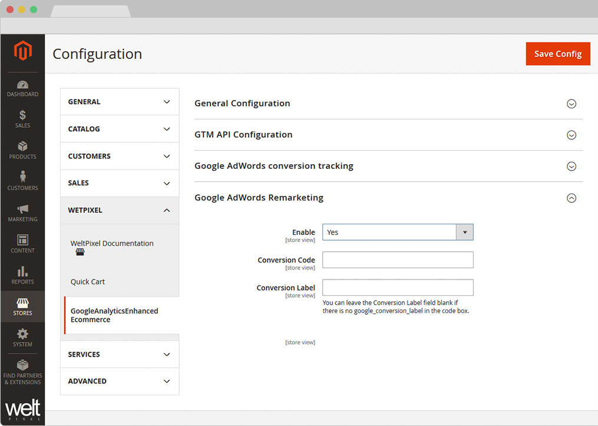
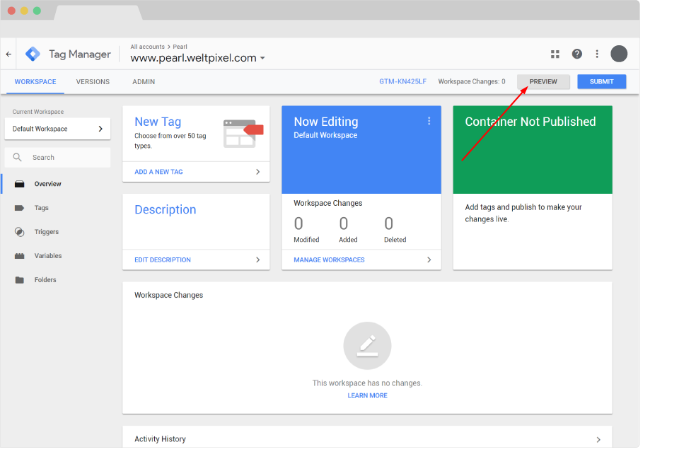
Troubleshooting.
For details about how to use Google Analytics 4's DebugView to confirm your data is correctly making it into Google Analytics, check out this article on our Support Center: How to preview and monitor Google Analytics 4 events using Debug View?
Preview and debug GTM tags
- Use GTM Preview functionality
There are many ways to troubleshoot your GTM setup. However we found that using the GTM preview mode you can quickly and easily troubleshoot your GTM setup regardless of your expertise level. Go to your GTM account and in the top right corner you will see the Preview Button
- After hitting the Preview Mode button, you will be redirected to the Tag Assistant page where you'll need to input your website's URL.
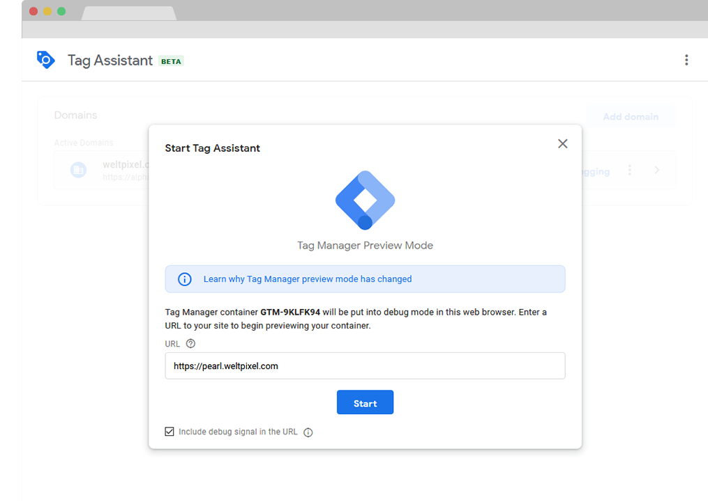
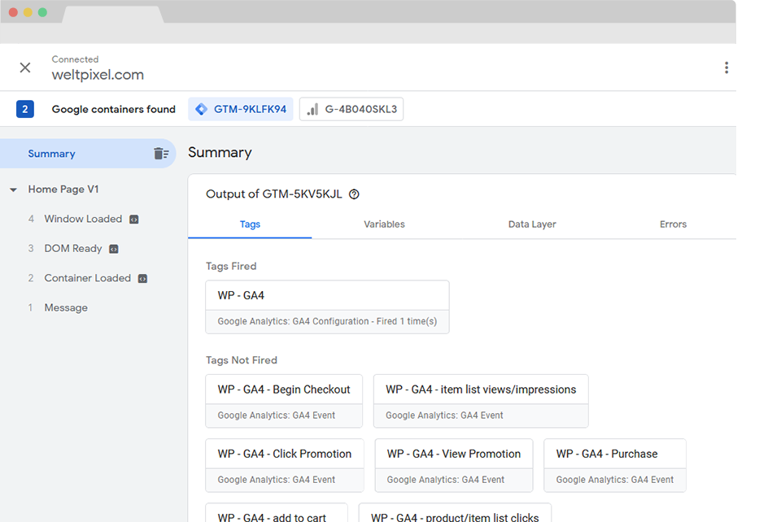
- You will then be redirected to your website in a new tab, with a confirmation that the debugger is connected. Switch back to the Tag Assistant tab and you'll be able to view every tag that gets fired here.
Change Log.
What's new in v.1.16.1 - March 6, 2026
- New Feature: Added a new Ad Blocker bypass functionality (First Party Tracking) which involves an integration with a Cloudflare Worker. The extension now generates the worker script required to serve the Google Tag Manager container via a first-party implementation, essentially serving to prevent most (if not all) Ad Blockers from stopping container and script loading. This is an advanced feature that requires a Cloudflare account with access to Workers, or an equivalent platform that has its own version of Workers. It's also experimental, and we recommend thorough testing on your own environment before committing to using it.
- New Feature: Increased overall attribution performance by adding an improvement to the way the extension reads available Client ID values from frontend cookies. The module now uses both PHP and JS methods for ensuring the correct Client ID is fetched. Additionally, the team recommends this article for users experiencing attribution problems: https://sweetcode.com/blog/ga4-mp-purchase-event-processing-bug. The findings detail a potential bug in Measurement Protocol which can be solved by using a setting in Google Analytics 4.
- New Feature: Added a new configuration option for Consent Management. The module can now be configured to use Magento Cookie Restriction Mode (this was and will continue to be the default) which prevents the GTM container from loading until the user accepts cookies (Basic Consent Mode) or External CMP, recommended for us when a 3rd party CMP is present on the store. This ensures the GTM container always loads and places the onus on the CMP for handling consent via Google Consent Mode v2.
- New Feature: Added a mechanism whereby UTM parameters found in the URL are now saved and persisted to be included with server-side Measurement Protocol purchase events. This may additionally assist with improving attribution performance in cases in which the Google Tag is unable to process or utilize UTM parameters properly, however, this is mostly a precaution and will likely not result in major data differences.
- New Feature: Added a new Magento Admin setting that allows for excluding certain categories from being used in event payloads. This applies to both the dataLayer and server-side Measurement Protocol payloads. Apart from this, another setting was added which allows for restricting the number of categories (category depth) sent to via the dataLayer/payload.
- Fixed an issue that would prevent purchase events from sending the correct Customer Group value. Previously, the event would read from the session-level data, and has been updated to read from the order-level data, for both client-side and server-side implementations.
- Fixed a bug related to the Promotion View event which was, in some extreme cases, causing a heavy DB load/delay via an UPDATE query.
- General code cleanup, removing unused exceptions.
What's new in v.1.16.0 - January 7, 2026
- Giving back: As a celebration of over 10 years of activity within the Magento 2 ecosystem, and as a way to give back to the community, a number of WeltPixel extensions (both FREE and paid) have officially gone fully Open Source via public Github repositories. Find the full list on Github.
- New Feature: Introduced composer as the official and singular installation method for all WeltPixel products. Previously, this was only available for the PRO version of the Google Analytics 4 extension, as well as the Marketing Suite Pro.
- New Feature: Extended the module's Order Grid Sent to Measurement Protocol functionality with the possibility of including the column in filtering options. This allows for easier identification of orders that were not properly sent.
- Added a new cleanup script that runs during setup:upgrade which improves performance by ensuring there are no multiple entries for the same order in the DB table which handles event pushes via cronjob.
- Added improvements to the logging dashboard functionality introduced in the previous version.
What’s new in v.1.15.11 - November 25, 2025
- New Feature (PRO): The extension now features two new Server-Side Social Pixel Addon integrations for Pinterest and Snapchat Ads, which further augument the included client-side integrations for the new platforms.
- New Feature (PRO): The extension now features a client-side integration with Snapchat Ads out of the box, adding the ability to send eCommerce events to Snapchat Pixel.
- New Feature (PRO): Augumented the extension's server-side logging functionality with an additional entry for Google Consent Mode v2, allowing it to log consent states for enabled every event.
- Fixed an issue that would sometimes prevent certain required parameters from being included in the payload for enabled Measurement Protocol events sent via cron.
- Adjusted session ID and timestamp parameter types sent via Measurement Protocol payloads to match Google's updated Measurement Protocol event reference documentation for attribution accuracy.
- Fixed an issue related to Bundle Products whereby not all associated Simple Products were sent via the event payload/dataLayer.
What’s new in v.1.15.9 - October 28, 2025
- Magento Compatibility: Introduced compatibility with the latest released Magento 2 Security Patches - Magento 2.4.8-p3, Magento 2.4.7-p8, Magento 2.4.6-p13, Magento 2.4.5-p15 & Magento 2.4.4-p16.
- New Feature (PRO): The extension now comes with an integration for client-side Pinterest Pixel tracking out of the box. An addon will be released in a future version to facilitate server-side tracking as well. This is exclusive to the PRO version.
- New Feature (PRO): Added the possibility of customizing the data sent to Google Ads/Google Analytics via Enhanced Conversions, allowing merchants to select the attributes they want to send for increased granularity.
- New Feature (PRO): An additional log file is now generated when the Measurement Protocol Enable File Log option is enabled, which allows for determining which orders were sent to Measurement Protocol via cron push.
- New Feature (PRO): Enhanced Meta Pixel client-side purchases with additional data about the user (email, phone number) to significantly increase Event Match Quality.
- New Feature (PRO): Added an interactive form that can be submitted via the Magento Admin to provide an efficient method of submitting feedback/feature requests.
- New Feature: Added improvements to Magento Admin messaging around Product Updates to ensure visual clarity for users not running the latest product release.
- New Feature: Added .ddev.site and .cloudwaysapps.com as accepted development domains. These domains will no longer require additional license keys.
- Fixed a bug that would cause a container import failure in GTM due to the Enhanced Conversions for Leads tag being generated when the option was disabled.
- Fixed an error that would be thrown on checkout when using New Customer Acquisition. This would only happen when customer emails contained apostrophes.
- Added adjustments to pricing parameter calculation to Begin Checkout and Add Payment Info pixel events to ensure a higher degree of data accuracy.
- Fixed a bug that would cause the Measurement Protocol Purchase event payload to become invalid when the Send User Data option was disabled.
- Fixed an error that would sometimes be thrown on Credit Memo generation due to a dynamically created Store ID variable in the code.
- Fixed an issue whereby Cookie Restriction mode verifications were not being applied to frontend tracking pixels, apart from Meta.
What’s new in v.1.15.7 - September 2, 2025
- New Feature (PRO): Implemented a minor revamp to the extension's Cron Push functionality. The module now stores the payload from the frontend Purchase event in the DB and uses it when pushing the Purchase via the included cron functionality. This ensures the payload is complete, and no details or parameters that would noramlly be included in the Purchase event are missing.
- New Feature (PRO): Optimized the Measurement Protocol event logging functionality to increase clarity and improve the process of searching/filtering through logged events. All data logged for a specific event is now included on the same line. Before this release, every logged piece of information would take up a separate line, even if related to the same eCommerce event.
- New Feature (PRO): Updated the extension's Promotion Tracking capabilities to ensure Purchase events of products associated with clicked promotions are updated to include Promotion Tracking parameters. This should ensure proper association in Google Analytics and allow for deeper insights into promotion performance.
- New Feature (PRO): Added a new Purchase event for the TikTok Pixel which should serve as a replacement for the existing CompletePayment and PlaceAnOrder events. The Purchase event was recently added by TikTok, while the two aforementioned events have been removed from their documentation.
- Magento Compatibility: Introduced compatibility with the latest released Magento 2 Security Patches - Magento 2.4.8-p2, Magento 2.4.7-p7, Magento 2.4.6-p12, Magento 2.4.5-p14 & Magento 2.4.4-p15.
- Adjusted Google Ads wp_conversion_value dataLayer parameter to ensure a number is always sent. Previously, some values were sent as strings which may have impacted conversion value reporting.
- Fixed an issue on multi-store setups that would result in Refund events being sent from the same (Default) store, regardless of which store they were initiated from.
- X (Twitter) Pixel: Fixed an issue that would result 0 parameters being sent to X (Twitter) with the Purchase and Add Payment Info events.
- X (Twitter) Pixel: Fixed a bug that would cause event mapping to be removed when disabling and re-enabling the extension.
- Meta Pixel: Updated content_type value for Configurable Products to "product_group". Previously, "product" was sent.
- Implemented normalization for hashed data sent via the dataLayer as specified by Google's Documentation.
- Added various adjustments to ensure best practices are followed for use with Magento Integration Tests.
- Fixed a bug that would cause Product Short Descriptions to display HTML tags on Category Pages.
What’s new in v.1.15.5 - July 29, 2025
- New Feature (PRO): Added a new feature for the Google Ads integration called Enhanced Conversions for Leads, a functionality that supplements offline conversion data to increase accuracy and bidding performance. This utilizes the same User-Provided Data variable that regular Enhanced Conversions use, however, it requires a separate tag to be used in Google Tag Manager. The extension can now automatically create and configure this tag based on your setup, via the JSON generation functionality.
- New Feature (PRO): The extension now features the capability of sending data to multiple Google Analytics 4 properties via Measurement Protocol. An unlimited number of properties can be added via the new settings, which can be combined with the capability of loading multiple Google Tag Manager containers onto the store, This allows you to send event data from the same Magento 2 instance to any number of Google Analytics 4 properties. This feature will also be included in most API Addons.
- New Feature (PRO): The extension now creates a new column in the Magento Order Grid which marks orders that were sent via Measurment Protocol. This introduces new debugging capabilities, as merchants are able to very easily ascertain which orders were successfully sent to Google and which were not, potentially indicating some sort of problem that warrants further debugging.
- New Feature (PRO): Introduced additional, more granular settings for Grand Total calculation based on taxes (including/excluding). This applies to all the included Social Platform integrations, both client-side and server-side via API addons. Additionally, an overhaul of the Magento Admin settings and labels was introduced for additional clarity and coherence.
- Fixed an issue that would, in very specific cases, prevent the extension (this also applies to API Addons) from sending purchase events via cron. This would happen when, for any reason, the ID of the product on the order that was supposed to be sent no longer existed (deleted product, for example). Additional validations were applied and events are now properly sent.
- Added an adjustment for the Meta Pixel integration which ensures the correct content_type parameter (product vs product_group) is sent for Configurable, Bundle & Grouped vs Simple Products. Previously, product was sent for all product types. This change is also included in the the Meta Conversions API Addon.
- Fixed an error that would, in rare cases, be thrown on the Checkout when using the Klaviyo API Addon. This would happen in the niche case in which a payment method could not be assigned to the order.
- Added additional validations to the Hyvä Compatibility module to prevent errors which would sometimes be thrown when default Magento 2 blocks were missing, such as the Wishlist Block.
- Fixed a PHP8 compatibility issue introduced with a previously-added function which extracts the gclid value from frontend cookies to use with Measurement Protocol Purchase events.
- Added additional validations to prevent Magento Admin errors when the Backend extension could not fetch the current server user due to permissions issues.
- Fixed a small dataLayer conflict that would prevent Enhanced Conversions for Google Ads and Google Analytics from functioning concurrently.
- Fixed an issue that would sometimes result in a license key being requested for the Hyvä Compatibility module.
- Added adjustments to frontend templates to adhere to Magento Best Practices regarding XSS validations.
- Fixed a typo in one of the extension's price calculation method names.
What’s new in v.1.15.3 - June 20, 2025
- New Feature (PRO): Measurement Protocol Purchase events now feature a small delay to ensure the Success Page has had time to load completely before the event is fired. This may help increase attribution accuracy by ensuring the client-side Page View event has had time to trigger, increasing the probability of Google Analytics being able to stitch data.
- New Feature (PRO): Measurement Protocol events now include a "gclid" parameter, if one is available in the frontend cookie. This parameter may help to increase attribution accuracy when users visit the store via a Google Ad click, in cases in which Google Analytics' automatic stitching doesn't function properly.
- New Feature (PRO): Added compatiblity with the recently released Hyvä CSP theme. A new compatibility module was created for this purpose, which is available within the extension's zip file as well as via Hyvä's official composer repositories. This compatbility is exclusive to the PRO version.
- New Feature (PRO): Added a new configuration option that allows merchants to choose whether to send price values with or without tax to Google Analytics. This applies to all events that involve specific products, apart from Purchase events, which have a separate setting.
- New Feature (PRO): Added options to allow for filtering of events based on Customer Groups. The extension now pulls all Customer Groups and allows merchants to select for which of those they'd like event data to be sent.
- New Feature (PRO): Added a new configuration option that allows merchants to choose whether to include tax in the shipping value, for all events that feature a shipping parameter.
- Magento Compatibility: Introduced compatibility with the latest Magento 2.4.8-p1, 2.4.7-p6, 2.4.6-p11 & 2.4.5-p13 Security Patches releases. Upgrade ASAP to keep your store secure.
- Fixed the Backend functionality that enables users to change the default Magento CSP Restriction Mode via the Magento Admin. This was broken starting with Magento 2.4.7.
- Made various code optimizations related to Grand Total and Subtotal calculations in order to increase module customizability.
- Changed the order of some settings in the Magento Admin for better grouping to increase legibility.
- Added optimizations to server-side cache generation for increased performance.
What’s new in v.1.15.1 - May 17, 2025
- Important adjustment (PRO): Implemented the use of the updated GS2 Cookie, a potentially integration-breakning change Google introduced in May 2025 without prior notice. If your tracking implementation is experiencing attribution or issues surrounding data tracking, please update to this version ASAP. More details can be found in this article: Update Google changed the GA4 cookie format without any prior notice
- New Feature (PRO): Added a new Magento Admin configuration option that allows for choosing between sending the Base or Display currency to Google Analytics, allowing for more granular control over currency data sent to Google Analytics.
- Fixed an issue related to Promotion Tracking that would prevent the View Promotion event from being fired, both via client and server-side.
- Fixed an issue related to Klaviyo API tracking which which would sometimes prevent data from being sent correctly on the Success Page.
What’s new in v.1.15.0 - April 22, 2025
- Magento Compatibility: Introduced compatibility with the new Magento 2.4.8 release, as well as the accompanying 2.4.7-p5, 2.4.6-p10, 2.4.5-p12 and 2.4.4-p13 Security Patches.
- PHP Compatibility: Introduced compatibilty with PHP 8.4, which is now officially compatible with the latest Magento 2.4.8 version.
What's new in v.1.14.19 - April 8, 2025
- New Feature: Google Analytics 4 PRO now comes with a native Klaviyo tracking integration, allowing you to send eCommerce event data to your Klaviyo account. Out of the box, you can track all the following events: Placed Order, Selected Payment Method, Checkout Started, Added to Cart, Added to Wishlist, Viewed Product, Viewed Category, Product Searched, Created Account, View Page. Simply enable the integration, add your public key and enable the events you want to track! The extension does the rest.
- New Feature: This product version introduces the possibility of extending the Klaviyo tracking functionality even further with the newly launched Klaviyo API Server-Side Addon. With this addon, each of the eCommerce events the extension tracks can be sent to Klaviyo via their API, ensuring a higher degree of accuracy and bypassing traditional browser limitations.
- New Feature: The TikTok Pixel integration now includes a CompletePayment event (both for client-side and server-side tracking), fired on the Success Page alongside the Purchase event. The CompletePayment event may be required for certain Ads configurations in TikTok.
- New Feature: Added magento2.docker as a valid domain for development purposes.
- New Feature: Added ddev.site as a valid domain for development purposes.
- Fixed an issue whereby, in some cases, Social Pixel events would be sent to their respective platforms with cached IDs, preventing the event from being registered beyond the first time.
- Fixed a small bug related to the dataLayer Preview functionality's IP restriction setting, which would sometimes work incorrectly when using CDNs such as Cloudflare.
- Fixed an issue that would prevent certain extension options from correctly applying in Single Store Mode instances.
- Added licensing adjustments for compatibility with the Google Analytics & Social Marketing Suite.
What's new in v.1.14.17 - March 12, 2025
- New Feature: Google Analytics 4 PRO now comes with a native X (Twitter) Pixel integration, allowing you to add the X (Twitter) Pixel to your website and send eCommerce event data to X Ads Manager. Out of the box, you can track all the following events: Purchase, Search, Add to Cart, Add to Wishlist, Initiate Checkout, Add Payment Info, View Product, View Category. Simply enable the integration, add your tracking code, set up your Event IDs and enable the events you want to track, the extension does the rest!
- New Feature: This product version introduces the possibility of extending the X (Twitter) tracking functionality even further with the newly launched X (Twitter) Ads API Server-Side Addon. With this addon, each of the eCommerce events the extension tracks can be sent to X (Twitter) Ads via their API, ensuring a higher degree of accuracy and bypassing traditional browser limitations. Gain access to unparalleled tracking prowess and take your X Ads game to the next level.
- New Feature: Added a new setting in the extension that allows for loading the Google Tag Manager script with a 'preconnect' attribute, potentially increasing performance on some installations.
What's new in v.1.14.15 - February 27, 2025
- New Feature: Google Analytics 4 PRO now comes with a native Microsoft Ads (Bing UET) integration, allowing you to add the Bing UET tag to your website and send eCommerce event data to Microsoft. Out of the box, you can track all the following events: Purchase, Add to Cart, Add to Wishlist, Begin Checkout, Add Payment Info, View Product, View Category, Search, Signup. Simply enable the integration, add your tracking code and enable the events you want to track, the extension does the rest!
- New Feature: Added support for the newly released Microsoft Ads (Bing UET) API Server-Side Addon. With this addon, each of the eCommerce events the extension tracks can be sent to Microsoft via their API, ensuring a higher degree of accuracy and bypassing traditional browser limitations. Gain access to unparalleled tracking prowess and take your Microsoft Ads game to the next level.
- Added various Magento Admin setting and description adjustments to accommodate the new Microsoft Ads tracking functionality, both for client-side and server-side.
What's new in v.1.14.13 - February 17, 2025
- New Feature: Extended the module's Exclude Order by Status functionality to apply to server-side Social Pixel addons as well. This also includes a cron that picks up unsent orders and sends them if they move into a status that is not excluded.
- New Feature: Added the possibility of sending hashed Enhanced Conversion data to Google Analytics via the Measurement Protocol, in the User Provided Data object.
- Magento Compatibility: Introduced compatibility with the newly released Magento 2.4.7-p4, 2.4.6-p9, 2.4.5-p11 and 2.4.4-p12 versions.
- Fixed a minor Magento Admin option dependency issue that would make the extension's script tag setting visible when disabled.
- Fixed an issue related to licensing which would prevent license keys from being validated various subdomains.
What's new in v.1.14.11 - January 15, 2025
- New Feature: Extended the module's Measurement Protocol Log functionality to apply to the server-side Social Pixel addons as well. When the functionality is enabled at the Social Pixel level, a log file will be found in the var/log directory containing data about triggered events. This requires the Social Pixel addons to be installed.
- New Feature: Added a new setting in the extension's configuration that allows for custom attributes to be added to the extension's script tags. Each attribute needs to be a separate entry, and data-attributes can be used as well. Examples of usage: nodefer, 'data-javascript-move="false"'.
- Fixed an issue whereby the extension's tracking scripts would be moved to the bottom of the page in cases in which custom attributes were inserted into the script tag. These scripts should always be exempt from being moved, even when using functionality to defer JS.
- Added an optimization to increase the extension's performance in relation to loading the Order Success Page, after placing a successful order. Loading would be slower in cases in which the store had millions of orders stored in the DB.
- Fixed an issue that would sometimes prevent the extension from generating the Google Tag Manager Container JSON file in the Magento Admin when using Cloudflare.
- Removed deprecated Magento 2.2.x code version from extension package.
What's new in v.1.14.9 - November 14, 2024
- New Feature: The PRO version of the extension's Social Pixel functionalities (Meta Pixel, Reddit Pixel & TikTok Pixel) can now be enhanced with 3 powerful new addons that facilitate full server-side implementations with their respective APIs: Meta Conversions API (CAPI), Reddit Conversions API (CAPI) and TikTok Events API. These addons are sold separately and can function independently of each other.
- New Feature: Overhauled the extension's backend settings to separate Social Pixel (Meta Pixel, Reddit Pixel & TikTok Pixel) settings from the main Google Analytics 4 PRO extension settings. Each Social Pixel has now been given its own Magento Admin section in order to ensure settings are easy to find and organized properly, as well as to maximize legibility.
- New Feature: Added a new setting for the extension's Google Ads Conversion Tracking functionality, specifically related to Enhanced Conversions (PRO version only) which now allows for sending pre-hashed Enhanced Conversion data to Google Ads. While Google considers this optional, hashing the data helps provide an additional layer of security and privacy.
- New Feature: The extension is now fully compatible with the Hyvä Checkout. Previously, the extension was only confirmed for compatibility with the default Luma Checkout, however, it has since been adjusted to be fully compatible with the proprietary checkout extension, both via client-side and Measurement Protocol tracking.
- New Feature: A new setting was added that allows for swapping the load order for the Google Tag Manager initialization script and the dataLayer script. Depending on store setup, speed, and other factors, you may experience more accurate client-side tracking one way or the other.
- New Feature: The Customer Group User Property can now be sent via the Measurement Protocol as well. Previously, this piece of data was only sent via the extension's client-side implementation.
- Fixed an error related to the Social Pixels (Meta Pixel, Reddit Pixel or TikTok Pixel) that would be thrown on Product Pages when the product in question had slashes (/) in the title.
- Adjusted the script tag the extension uses to ensure its scripts stay in the head section when Move JS to Bottom functionalities are used. The tag now uses a data-attribute.
- Added additional validations to account for situations in which the Magento Cookie Restriction mode status can't be read properly.
- Fixed an error specific to PHP 8.x that would sometimes be thrown when using the extension's Promotion Tracking functionality.
- Added new whitelisted domains to account for Magento CSP restrictions.
What's new in v.1.14.7 - August 29, 2024
- New Feature: The PRO version of the extension can now generate a full JSON container file for Google Tag Manager Server Containers. The feature is currently a BETA functionality and will be changed/altered as a true Server-Side integration evolves. This is an advanced feature, currently which requires technical knowledge, as well as an already-provisioned server-side tracking implementation/container to use.
- New Feature: The PRO version of the extension now comes with a native TikTok Pixel integration. Similar to its already existent Meta Pixel and Reddit Pixel functionalities, this integration allows for sending eCommerce event data to TikTok Ads.
- Added an additional nonce to one of the extension's scripts that action on the Checkout, relating to the Measure Product Clicks (Select Item) functionality to account for recent Magento CSP requirements.
- Applied adjustments surrounding the extension's GTM script initialization admin settings to prevent malformed GTM scripts from breaking functionality and potentially causing issues on the frontend.
- Fixed an error related to PHP 8 that would be thrown on the Home Page in certain niche cases when the Measure Product Clicks (Select Item) functionality was enabled.
- Fixed an error that would sometimes be thrown on the Checkout caused by a Magento/Product configuration that would result in a division by zero.
- Fixed an issue that would prevent the Add to Wishlist event from being triggered when adding a product to the Wishlist from the Cart Page.
What's new in v.1.14.5 - July 22, 2024
- New Feature: Overhauled the extension's Promotion Tracking functionality. The extension now allows you to send items alongside the View Promotion and Select Promotion events, either via HTML structure or via the dedicated GA4 Promo Link Widget.
- New Feature: Adjusted the extension's Brand tracking capabilities to allow for using text-type attributes as well. Previously, this was not the case and text-type attributes could not be used for this purpose.
- Fixed a bug specific to multi Store View environments that would result in orders created in the Magento Admin being sent to the Default Store View regardless under which Store View they were created.
- Fixed a Measurement Protocol tracking bug that would sometimes result in Purchases being sent to Google Analytics twice. This serves to ensure order values are not duplicated in Google Analytics.
- Adjusted script initialization order to ensure the Google Tag Manager script is initialized before the dataLayer, potentially improving tracking accuracy, in some cases.
- Adjusted the dataLayer for Google Ads Enhanced Conversions to ensure the Country Code is sent via the User Provided Data variable instead of the Country Name.
- Fixed an issue whereby the "Exclude orders with 0 value" option would not work when tracking purchases via the Measurement Protocol.
- Added various improvements and optimizations to better align with Magento Security Best Practices.
- Added minor Magento Admin adjustments for increased clarity.
- Code cleanup - removed deprecated PHP methods.
What's new in v.1.14.3 - June 12, 2024
- Important adjustment: Important adjustment: Added an adjustment to account for a Google Measurement Protocol bug that prevents Google Analytics from processing event data when sending the User ID in the event payload. This only happened when a certain Google policy was accepted. More details in this blog post.
- New Feature: The PRO version of the extension now features Reddit Pixel tracking, similar to the recently added Meta Pixel Tracking functionality, the extension has been upgraded with a native Reddit Pixel integration that allows for tracking various events.
- New Feature: Added a new backend configuration option that is applicable when the Item Variant is enabled, which allows for choosing between sending the Product SKU as the variant, or a dynamically generated string consisting of the product configurations.
- New Feature: Added a new section in the Magento Admin that checks to make sure the latest product version is installed and notifies in case an update is available, as well as a button that allows for new features to be requested.
- Fixed an issue related to the Add to Cart & View Item Measurement Protocol events which resulted in the Parent Product price being sent to Google Analytics even when the the Child vs Product backend option was set to Child.
- Fixed an issue that would, in certain configurations when the Send Enhanced Conversions to Google Analytics 4 option was enabled, cause a warning to show up during the backend JSON generation process.
- Fixed a bug that would cause the extension's script initialization to break because of incorrect characters when adding custom attributes to the script tag in the extension's backend configuration.
- Fixed a bug that would prevent the Remove from Cart event from being fired when using the extension's Measurement Protocol tracking. The client-side version of this event was not affected by this.
- Added a technical improvement to the extension's Item Name fetching process for View Item List and View Item events which allows for enhanced compatibility with various Magento customizations.
- Added minor improvements to script nonce generation in order to ensure the extension's scripts properly pass Magento CSP restrictions.
- Added an adjustment to the extension which boosts compatibility with 3rd party extensions that send/modify HTTP headers.
- Added improvements to discount parameter calculations for products with tax included in the price.
- Added minor label adjustments to Measurement Protocol User Properties admin settings.
- Introduced compatibility with the latest Magento 2.4.7-p1, 2.4.6-p6, 2.4.5-p8 and 2.4.4-p9 versions.
What's new in v.1.14.1 - April 19, 2024
- New Feature: Added an option that allows for including a new event in the dataLayer called ads_purchase which can be used as a trigger for the Google Ads Conversion Tracking Tag, used in cases in which the tag misses timing.
- New Feature: Added support for Enhanced Conversions in Google Analytics 4. Previously, this feature was only available for Google Ads, however, Google has since implemented it for Google Analytics as well.
- New Feature: Added a new configuration option for the Measurement Protocol functionality to allow for sending various User Properties to Google Analytics, which can be used to create Custom Dimensions.
- New Feature: Extended the New Customer Data reporting functionality for Google Ads to ensure data is sent for Guest Customers as well as Signed-In users.
- Fixed an issue related to Enhanced Conversions for Google Ads whereby User-Provided variable values were not being mapped properly in the exported JSON.
- Added adjustments to Meta Pixel View Content event structure for Item IDs (SKUs) to ensure proper event validation in Facebook Ads Manager.
- Fixed a bug that would sometimes cause an error to be displayed when modifying item quantity in the cart from a small to a large number.
- Fixed a bug that would sometimes result in item variants being duplicated in the Add to Cart & Remove from Cart event dataLayer.
- Added adjustments to increase compatibility with custom script insertion/optimization methods, particularly Rocket Javascript.
- Added performance optimizations related to server-side (Measurement Protocol) View Item List event caching.
- Added/adjusted Magento Admin configuration option descriptions for improved clarity.
- Confirmed compatibility with the latest Magento 2.4.7 release, as well as newly released 2.4.6-p5, 2.4.5-p7 & 2.4.4-p8 Security Patches.
- Confirmed compatibility with PHP 8.3 on the Magento 2.4.7 release. PHP 8.2 is also supported for this Magento version.
- Added security improvements to the Backend module's license verification process.
What's new in v.1.12.17 - Jan 12, 2024
- New Feature: Extended the Enhanced Conversions functionality to include Customer Name & Address details in the dataLayer as well. The required Google Tag Manager variables are automatically created via JSON container import.
- New Feature: Added a new setting related to the View Item event for Configurable Products, which allows for sending all associated Simple Products alongside the View Item event in one push, via the "items" array.
- New Feature: Excluded bots from being tracked via the Measurement Protocol. This increases the overall tracking accuracy as requests from the most common bots/crawlers are now prevented from skewing data.
- New Feature: Extended the Purchase event with a "discount" parameter, which applies whenever a purchased product has a discounted price via coupon, price rule or Special Price.
- Fixed an error that would be thrown, in some cases, on the frontend when the Meta Pixel Tracking functionality was enabled.
- Added minor code optimizations/adjustments for increased dataLayer customizability.
What's new in v.1.12.15 - Dec 14, 2023
- New Feature: Added support for Google Ads Cart Data, along with a Google Merchant Center integration upon Cart Data configuration. The extension automatically configures the Google Ads Conversion Tracking tag via the JSON container import.
- New Feature: Extended the New Customer Data functionality to automatically update the Google Ads Conversion Tracking Tag in Google Tag Manager with the new settings via JSON container import.
- New Feature: Added a new Magento Admin setting specific to the dataLayer Preview functionality that allows for setting specific IP ranges for which to display the dataLayer Preview box.
- Fixed an error that would be thrown in the Magento Admin when trying to process a refund. This would usually happen when attempting the refund for a product that no longer exists.
- Added optimizations to account for various caching solutions, including Varnish.
- Added various optimizations for ADA Compliance.
What's new in v.1.12.11 - Oct 12, 2023
- New Feature: New Feature: Extended the New Customer Data functionality for Google Ads to automatically configure the Google Ads Conversion Tracking Tag and create new dataLayer Variables in Google Tag Manager upon JSON container import.
- New Feature: Added a new admin setting which allows for changing the way the Product List Block is loaded, enhancing compatibility with 3rd party functionality on Category and Search pages.
- New Feature: Extended the Measurement Protocol functionality to send a hostname property alongside each event, allowing for page location tracking in Google Analytics.
- Fixed a bug that would prevent the Select Item (Product Click) event from being triggered via Measurement Protocol when the Category name had a " character in it.
- Fixed a bug that would cause the Impressions Chunk Size setting to be ignored on Search pages for the View Item List client-side event.
- Implemented changes to Magento Admin setting names and descriptions surrounding Google Ads functionalities for increased clarity.
- Confirmed compatibility with the latest Magento 2.4.6-p3, 2.4.5-p5 and 2.4.4-p6 releases.
What's new in v.1.12.9 - Sep 5, 2023
- New Feature: Added a new dataLayer Debug/Preview functionality, which allows for turning on a special window in the frontend, populated with the current dataLayer contents, for better client-side tracking debugging.
- New Feature: Added a new option in the Meta Pixel (Facebook Pixel) configuration section that allows for choosing between sending the Product SKU or ID as the identifier for all available events.
- New Feature: Extended the View Item event firing conditions to include Configurable Product swatch selection changes, which allows for better tracking of individual product variants.
- New Feature: Extended Magento Multi Shipping Checkout support with Add Payment Info event. This applies to both client-side and server-side tracking implementations.
- Fixed a bug that prevented event data from being sent to Google Analytics when using a Custom Dimension based on an attribute with a "null" value in that event.
- Fixed a bug that would prevent the Child vs Parent product tracking functionality from functioning, as reports would always be populated using Parent data.
- Fixed a bug that would cause a Remove from Cart event to be fired incorrectly when trying to add a product with no available stock to the cart.
- Fixed a bug that would cause a lack of Category information in the View Item event on instances with multiple stores and Root Categories.
- Fixed a bug that would cause multiple View Item events to be triggered on Product Pages with Related and Up-Sell Carousels/Grids.
- Fixed a minor incompatibility with the Subcategories with Images Category Layout functionality in the Pearl Theme.
- Adjusted Magento Admin Panel Google Ads setting titles and descriptions for increased clarity and legibility.
- Minor code cleanup and improvements for better alignment with Magento best practices.
What's new in v.1.12.7 - Jul 26, 2023
- New Feature: Added a native integration with Google Ads Enhanced Conversions - this feature improves the accuracy of your conversion measurement by sending hashed first party conversion data from your website to Google in a privacy safe way. More details can be found in the Google Documentation on the topic - PRO version only.
- New Feature: Added support for Google Ads New Customer Data - this feature enables you to send data required in order to create and optimize a new customer acquisition goal in Google Ads. More details can be found in the Google Documentation on the topic - PRO version only.
- New Feature: Added support for the Magento Multi Shipping Checkout functionality. The extension can now trigger a purchase event for each order generated by the Magento 2 Multi Shipping Checkout, enhancing its tracking capabilities both via frontend (client-side) and Measurement Protocol (server-side) - PRO version only.
- New Feature: Added a feature that allows you to exclude orders created with specific statuses from being sent to Google Analytics. This is especially useful when importing orders with custom statuses into Magento 2 and you don't want to send them to Google Analytics - PRO version only.
- Added major performance optimizations by refactoring the method through which the module builds product lists for the view_item_list event. This change improves loading performance on Category and Search pages with large numbers of products displayed per page.
- Added a minor dataLayer adjustment for the coupon parameter, which is now sent as an empty string even if a coupon is not applied.
- Implemented minor code optimizations for best practices: removed ObjectManager class dependency.
- Improved Magento Admin option comments related to Custom Dimensions for increased clarity.
What's new in v.1.12.5 - Jul 5, 2023
- New Feature: Added integration with Meta Pixel (formerly Facebook Pixel), allowing you to set up Meta Pixel Tracking for the following events: Page View, Category View, Product View, Add To Cart, Add To Wishlist, Search, Initiate Checkout, Add Payment Info, Purchase - PRO version only.
- New Feature: The extension can now track orders created via the Magento Admin with Measurement Protocol. When an order is created via the Admin Panel, the extension now triggers a server-side Purchase event with all the order details - PRO version only.
- New Feature: Implemented a new GA4 cache file handing method which increases performance for very large catalogs. The new method ensures a faster and less demanding cache file deletion process which makes use of a cron job.
- Fixed an issue that would sometimes result in the Add Payment Info Tag not being fired. This was caused by the speed at which the user was redirected from the Checkout Page to the Success Page.
- Added an optimization which ensures proper value parameter calculation for the Add to Cart and Remove from Cart events, which now takes into consideration the Quantity that was added/removed.
- Fixed a bug that would cause item_category/item_list_name parameters to be split up incorrectly when the view_item_list event was triggered on Categories that had slashes in the name.
- Fixed an issue that would sometimes prevent the server-side Purchase event from being triggered when Cookies were not accepted by the user on the frontend.
- Fixed a minor admin bug that caused enabled Measurement Protocol events to become unselected when the option was turned off and then back on again.
- Updated CSP whitelist to account for broader Google domain declarations and prevent frontend CSP warning/error reports.
- Fixed a bug that would cause an empty view_item_list event to be sent on Categories that contained no visible products.
- Fixed an error that would sometimes be thrown when trying to add a Configurable Product to the cart from a Wishlist.
- Added additional error handling on the Checkout Page for increased compatibility with 3rd party integrations.
What's new in v.1.12.1 - May 30, 2023
- New Feature: Introduced a refactored dataLayer for Client-Side events, aligning the extension events, as well as Tags, Triggers and Variables with updated Google Documentation recommendations. A reimport of the container JSON is required. More details in this article: Reimporting a Google Tag Manager container - Merge and Overwrite Conflicting Tags, Triggers and Variables.
- New Feature: Added Sign Up, Login and Search events to the extension's Client-Side tracking capabilities. Previously, these events were only available in the PRO version via the Measurement Protocol functionality.
- New Feature: Added an option to include custom Checkout Page paths, thereby increasing compatibility with 3rd-party Checkout solutions that change or alter the default Magento Checkout Page path.
- New Feature: Added a debug flag to the Measurement Protocol that allows events to be displayed in the Google Analytics debugView. Previously, this was only available for Client-Side events.
- Adjusted the triggering of the Server-Side Purchase event to ensure it happens on the Success Page and not beforehand for increased compatibility with 3rd-party payment solutions.
- Fixed an issue that would sometimes prevent the add_payment_info event from being triggered Client-Side due to the redirect to the Success Page happening too fast.
- Fixed an error that would sometimes be thrown when creating a Credit Memo via the Magento Admin when the Measurement Protocol - Refund event was enabled.
- Fixed an issue that would result in an incorrect Google Ads ecomm_pagetype parameter value being sent on the Checkout page.
- Fixed a bug that would prevent the Server-Side view_item_list event from being triggered when cookies were not accepted.
- Added additional PHP 8.2 code validations.
What's new in v.1.11.19 - March 23, 2023
- Implemented a solution in the extension's Measurement Protocol functionality to ensure proper Source/Medium Attribution in the Google Analytics 4 Dashboard.
- Fixed a bug that would result in an error on the frontend when changing the quantity for a Configurable Product in the mini cart or on the Cart Page.
- Fixed an issue that would prevent the disabling of all events in the Measurement Protocol Admin Settings. One event would always remain selected.
- Optimized the dataLayer for events containing the item_category parameter. This ensures that product subcategory tree data is properly sent.
- Fixed a bug that would occasionally prevent certain frontend notification messages from being displayed.
- Adjusted Magento Admin Custom Attribute settings to allow attributes containing an underscore.
- Fixed an issue that would prevent Promotion Tracking events from firing.
- Added Magento Admin comment adjustments for increased clarity.
- Added additional validations for PHP 8.1.
- Fixed an error that would sometimes be thrown in the WeltPixel Debugger, depending on various server permissions.
- Added compatibility with the latest Magento 2.4.6 and 2.4.5-p2 versions.
- Confirmed compatibility with Hyvä Theme versions 1.1.23 and 1.2.3.
What's new in v.1.11.17 - Feb 9, 2023
- Fixed an error that would be thrown when compiling the Magento 2 code via the Command Line Interface. This error was specific to the standard version of the module, and did not affect the PRO version.
- Fixed an error that sometimes occurred when the default Magento 2 Reviews module was disabled in the Magento core.
- Added minor README adjustments for improved clarity.
What's new in v.1.11.15 - Feb 1, 2023
- New Feature: Updated the functionality for the Add to Cart and Remove from Cart events to account for any cart quantity changes. This ensures an Add to Cart or Remove from Cart event is fired whenever the cart quantity is modified, through whichever means this happens.
- Added compatibility with the latest Hyva Theme releases, versions 1.2.1 and 1.1.21. For versions 1.1.x, a patch is now required to be applied in order to ensure full functionality. More details about how to apply the patch can be found in the dedicated installation section.
- Fixed a bug that sometimes prevented the Purchase event from being fired when Measurement Protocol was enabled for certain events, but not for the Purchase event itself.
- Code cleanup for certain dataLayer events.
What's new in v.1.11.14 - Jan 10, 2023
- New Feature: Added full compatibility for Google Analytics 4 PRO with the Hyvä Theme. This is achieved through a compatibility addon provided with the extension. More details in the dedicated installation section.
- Fixed a bug that would sometimes result in users being redirected to a 404 page when adding a product with Configurable Options to their cart from Cross-Sell carousels.
- Refactored event dataLayer push for increased adherence to Google Analytics 4 guidelines.
What's new in v.1.11.11 - Nov 11, 2022
- New Feature: Extended the Measurement Protocol functionality - It's now possible to send the view_item_list (Impression) event Server-Side. This applies to Category Pages, Search Results Pages, Advanced Search and Upsell/Related Products on Product Pages (PRO version only)
- New Feature: Extended the Measurement Protocol functionality - It's now possible to send the select_item (Product Click) event Server-Side (PRO version only)
- New Feature: Added an Admin option that allows you to choose whether to send the User ID when using Measurement Protocol (PRO version only)
- Fixed an issue whereby the Magento Admin JSON generation process would not generate tags for certain events.
What's new in v.1.11.9 - October 7, 2022
- New Feature: Added the possibility of disabling the dataLayer for events sent via Measurement Protocol, which ensures none of the selected events are duplicated - PRO version only
- Fixed an issue that certain dataLayer variables to be marked as "Other" when using Magento's Move JS to Bottom functionality in conjunction with Full Page Caching.
- Added various adjustments to Magento Admin setting text for increased clarity.
What's new in v.1.11.7 - September 1, 2022
- New Feature: Extended the Child/Parent SKU/ID functionality to apply to Add to Cart and Remove from Cart events as well.
- Fixed an error related to PHP 8.1 that was thrown when the Google Ads Remarketing functionality was enabled.
- Fixed an issue that would sometimes prevent Product Impressions from being pushed when using Ajax Pagination.
- Fixed an error related to PHP 8.1 that occurred when refreshing the Success Page.
- Performed various code cleanups related to PHP 8.1.
- Confirmed compatibility with the latest Magento 2.4.5 and 2.4.4-p1 versions.
- Updated installation/upgrade scripts to use data patches.
What's new in v.1.11.5 - August 17, 2022
- New Feature: The Google Analytics 4 PRO extension is now available for purchase, which contains improved and 100% accurate tracking via Measurement Protocol.
What's new in v.1.11.1 - April 25, 2022
- New feature: Added the possibility of including custom Success Page URLs with an asterisks to account for dynamic Success Page URLs and increase compatibility with 3rd party Payment Methods.
- Fixed a bug that, in some cases, caused the default Magento pagination to break on Category Pages when the module was enabled.
- Fixed an error that occurred when the Impression Chunk Size setting in the Magento Admin was set to 0.
- Ensured Price and Quantity values are passed as integers via the dataLayer to conform to Google recommendations.
- Initiated a clear of the dataLayer eCommerce object before a push event to conform with Google recommendations.
- Added a "value" parameter to the dataLayer for Checkout and View Cart events.
- Code cleanup: Removed certain unused jQuery/UI elements from the Magento Admin.
- Fixed an incorrect licensing message on B2B Magento Enterprise instances which would display when an invalid license was entered.
- Confirmed compatibility with the latest Magento 2.4.4 and 2.3.7-p3 versions as well as PHP 8.1.
What's new in v.1.10.17 - October 22, 2021
- Confirmed compatibility with the latest Magento 2.4.3-p1 and 2.3.7-p2 versions.
What's new in v.1.10.15 - August 31, 2021
- Fixed an error that was thrown when disabling the Google Tag Manager or Google Analytics 4 extensions before installing other WeltPixel extensions - This issue affected Pearl Theme users only.
- Added performance optimizations and enhanced compatibility with 3rd party code on Category Pages.
- Confirmed compatibility with the newly released Magento 2.4.3, 2.4.2-p2 and 2.3.7-p1 versions.
- Added .localhost as an accepted domain termination for the licensing process.
What's new in v.1.10.11 - July 7, 2021
- Fixed an incompatibility with the default Magento 2.4.2 Move JS to Bottom functionality. When enabled, it would change the execution order of events on the Success Page, which sometimes caused missing transactions in Google Analytics.
- Fixed an issue that caused missing Revenue in Google Analytics 4. Requires a regeneration and reimport of the JSON file into Google Tag Mangager, after which the container needs to be published.
- Added improvments to the WeltPixel Developer Magento Admin section. Latest Cron Jobs now lists the last 100 executed Cron Jobs.
What's new in v.1.10.9 - May 18, 2021
- Fixed a Display Currency discrepancy related to the Add and Remove from Cart events.
- Confirmed compatibility with the newly released Magento 2.3.7 and 2.4.2-p1 versions.
What's new in v.1.10.7 - March 26, 2021
- Added compatibility adjustments with a new Product Labels extension functionality. Requires the WeltPixel Product Labels extension.
- Added small Magento Admin label adjustments.
- Adjusted WeltPixel Developer section comments.
What's new in v.1.10.5 - February 4, 2021
- Initial release.